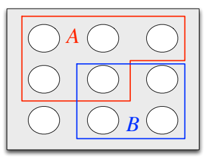
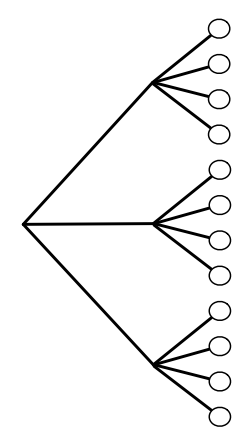
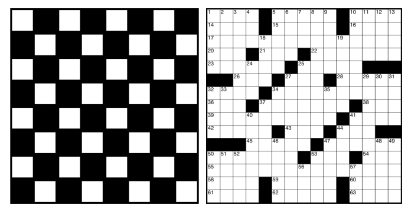
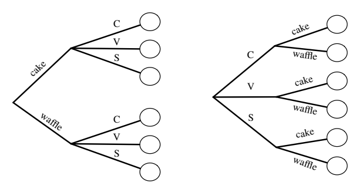
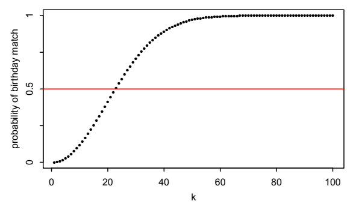
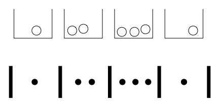

1 확률과 경우의 수
운. 우연의 일치. 무작위성. 불확실성. 위험. 의심. 행운. 우연.
이 말들은 아마 수도 없이 들어 보았겠지만, 대개 막연하고 일상적인 뜻으로 쓰였을 것이다. 안타깝게도 확률은 과학과 일상생활 어디에나 존재하면서도 직관에 깊이 어긋날 수 있다. 타당한지 의심스러운 직관에 의존하면 부정확한 예측을 하거나 지나치게 확신에 찬 결정을 내릴 위험이 크다. 이 책의 목표는 불확실성과 무작위성을 원칙에 따라 정량화하는 논리적 틀로서 확률을 소개하는 것이다. 처음의 짐작이 논리적 추론과 일치할 때도, 운이 따라주지 않아 그렇지 않을 때도 직관을 강화하고자 한다.
1.1 왜 확률을 공부하는가?
수학은 확실성의 논리이고, 확률은 불확실성의 논리이다. 확률은 변동을 이해하고 설명하며, 신호와 잡음을 구분하고, 복잡한 현상을 모형화하는 도구를 제공하기 때문에 매우 다양한 분야에서 유용하다. 계속 늘어나는 응용 분야 중 일부만 들면 다음과 같다.
- 통계학: 확률은 통계학의 기초이자 언어이며, 데이터를 이용해 세상을 알아가는 강력한 방법들을 가능하게 한다.
- 물리학: 아인슈타인은 “신은 우주를 상대로 주사위놀이를 하지 않는다”라고 말한 것으로 유명하지만, 오늘날의 양자물리학에 대한 이해에서는 자연의 가장 근본적인 수준에 확률이 깊이 관여한다. 통계역학 역시 확률에 기초한 물리학의 주요 분야이다.
- 생물학: 유전학은 유전자의 유전과 무작위 돌연변이의 모형화 양쪽에서 확률과 깊이 얽혀 있다.
- 컴퓨터과학: 무작위 알고리즘은 실행되는 동안 무작위 선택을 하며, 많은 중요한 응용에서 현재 알려진 어떤 결정론적 대안보다 단순하고 효율적이다. 또한 확률은 알고리즘의 성능을 연구할 때와 기계학습 및 인공지능에서도 핵심 역할을 한다.
- 기상학: 일기예보는 확률을 이용해 계산하고 표현한다. 적어도 그렇게 해야 한다.
- 도박: 초기의 확률 연구 상당수는 도박과 우연에 좌우되는 게임에 관한 질문에 답하기 위한 것이었다.
- 금융: 앞의 예와 겹칠 위험을 무릅쓰고 덧붙이자면, 확률은 계량금융의 핵심이다. 시간에 따른 주가를 모형화하고 금융상품의 “공정한” 가격을 결정하는 일은 확률에 크게 의존한다.
- 정치학: 최근 정치학은 점점 더 계량적이고 통계적인 성격을 띠게 되었으며, 여론조사 분석, 게리맨더링 평가, 선거 예측 등에 응용된다.
- 의학: 환자를 치료군이나 위약군에 무작위로 배정하는 무작위 임상시험의 발전은 최근 의학 연구를 바꾸어 놓았다. 생물통계학자 데이비드 해링턴이 말했듯이, “어떤 이들은 이것이 20세기 과학 의학의 가장 중요한 진전일 수도 있다고 추측했다. […] 현대 과학의 흥미로운 역설 가운데 하나로, 무작위 시험은 연구 설계에 우연한 변동을 도입함으로써 통제된 실험에서 관측된 이질성과 관측되지 않은 이질성을 모두 ‘보정한다.’” [16]
- 삶: 삶은 불확실하고 확률은 불확실성의 논리이다. 삶에서 내리는 모든 결정에 대해 형식적인 확률 계산을 수행하는 것은 실용적이지 않지만, 확률에 관해 깊이 생각하면 흔한 오류를 피하고, 우연의 일치를 이해하며, 더 나은 예측을 하는 데 도움이 된다.
확률은 원칙에 입각해 문제를 푸는 절차를 제공하지만, 함정과 역설을 낳기도 한다. 예를 들어 이 장에서는 17세기에 미적분을 독립적으로 발견한 두 사람, 고트프리트 빌헬름 라이프니츠와 아이작 뉴턴 경조차 확률의 기초적인 오류를 피하지 못했음을 볼 것이다. 이 책에서는 잠재적인 함정을 피하도록 다음 전략을 사용한다.
- 시뮬레이션: 확률의 아름다운 측면 중 하나는 문제를 시뮬레이션으로 연구할 수 있는 경우가 많다는 점이다. 의견이 다른 사람과 답을 두고 끝없이 논쟁하는 대신 시뮬레이션을 실행해 누가 옳은지 경험적으로 확인할 수 있다. 각 장의 끝에는 무료 통계 계산 환경인 R에서 계산과 시뮬레이션을 수행하는 예제를 담은 절이 있다.
- 생물학적 위험 표시: 확률에서 무엇이 타당한 추론이고 무엇이 아닌지를 더 깊이 이해하려면 흔한 실수를 공부하는 것이 중요하다. 이 책에서는 흔한 실수를 ‘생물학적 위험’이라 부르고 위험 표시로 나타낸다. 그런 실수는 건강에 해로울 수 있기 때문이다!
- 타당성 점검: 한 가지 방법으로 문제를 푼 후에는 같은 문제를 다른 방법으로 풀어 보거나, 단순한 경우와 극단적인 경우에 답이 말이 되는지 살펴보곤 할 것이다.
1.2 표본공간과 조약돌 세계
확률의 수학적 틀은 집합을 중심으로 세워진다. 어떤 실험을 수행하여 가능한 결과들의 집합 중 하나를 얻는다고 상상해 보자. 실험을 수행하기 전에는 어떤 결과가 나올지 알 수 없다. 수행한 후에는 결과가 실제 결과로 “결정된다.”
정의 1.2.1 (표본공간과 사건). 실험의 표본공간 \(S\)는 그 실험에서 가능한 모든 결과의 집합이다. 사건 \(A\)는 표본공간 \(S\)의 부분집합이며, 실제 결과가 \(A\)에 속하면 \(A\)가 발생했다고 말한다.

실험의 표본공간은 유한할 수도 있고, 가산무한일 수도 있으며, 비가산무한일 수도 있다. 가산집합과 비가산집합에 대한 설명은 수학 부록 A.1.5절을 보라. 표본공간이 유한하면 그림 1.1처럼 조약돌 세계로 시각화할 수 있다. 각 조약돌은 하나의 결과를 나타내고, 사건은 조약돌들의 집합이다.
실험을 수행하는 것은 조약돌 하나를 무작위로 고르는 것에 해당한다. 모든 조약돌의 질량이 같다면 각 조약돌이 선택될 가능성은 같다. 이 특수한 경우가 다음 두 절의 주제이다. 1.6절에서는 조약돌의 질량이 서로 달라도 적용되는 확률의 일반적인 정의를 제시한다.
집합론은 사건을 표현하고 다루는 풍부한 언어를 제공하므로 확률에서 매우 유용하다. 수학 부록 A.1절에 집합론 복습이 있다. 집합 연산, 특히 합집합, 교집합, 여집합을 이용하면 이미 정의된 사건으로 새로운 사건을 쉽게 만들 수 있다. 이 개념들은 하나의 사건을 여러 방식으로 표현할 수도 있게 해 준다. 흔히 같은 사건이라도 어떤 표현은 다른 표현보다 다루기가 훨씬 쉽다.
예를 들어 \(S\)를 실험의 표본공간이라 하고 \(A,B\subseteq S\)를 사건이라 하자. 그러면 합집합 \(A\cup B\)는 \(A,B\) 중 적어도 하나가 발생할 때, 그리고 그때에만 발생하는 사건이다. 교집합 \(A\cap B\)는 \(A\)와 \(B\)가 모두 발생할 때, 그리고 그때에만 발생하는 사건이며, 여집합 \(A^c\)는 \(A\)가 발생하지 않을 때, 그리고 그때에만 발생하는 사건이다. 또한 드모르간의 법칙이 성립한다.
\[ (A\cup B)^c=A^c\cap B^c,\qquad (A\cap B)^c=A^c\cup B^c. \]
\(A\)와 \(B\) 중 적어도 하나가 발생한다는 말이 거짓이라는 것은 \(A\)도 발생하지 않고 \(B\)도 발생하지 않는다는 말과 같으며, 둘 다 발생한다는 말이 거짓이라는 것은 적어도 하나가 발생하지 않는다는 말과 같기 때문이다. 세 개 이상 사건의 합집합과 교집합에 대해서도 유사한 결과가 성립한다.
그림 1.1의 예에서 \(A\)는 조약돌 5개로 이루어진 집합이고 \(B\)는 4개로 이루어진 집합이다. \(A\cup B\)는 \(A\) 또는 \(B\)에 속하는 조약돌 8개로 이루어져 있으며, 여기에는 둘 다에 속하는 조약돌도 포함된다. \(A\cap B\)는 \(A\)와 \(B\)에 모두 속하는 조약돌 하나로 이루어지고, \(A^c\)는 \(A\)에 속하지 않는 조약돌 4개로 이루어진다.
표본공간이라는 개념은 매우 일반적이고 추상적이므로 구체적인 예를 몇 가지 염두에 두는 것이 중요하다.
예제 1.2.2 (동전 던지기). 동전을 10번 던진다. 앞면을 H, 뒷면을 T로 쓰면 가능한 결과, 즉 조약돌 중 하나는 HHHTHHTTHT이며, 표본공간은 H와 T로 이루어진 길이 10인 모든 문자열의 집합이다. H를 1로, T를 0으로 표현할 수 있고, 앞으로 그렇게 하겠다. 그러면 결과 하나는 \(s_j\in\{0,1\}\)인 수열 \((s_1,\ldots,s_{10})\)이고, 표본공간은 그러한 모든 수열의 집합이다. 이제 몇 가지 사건을 살펴보자.
첫 번째 던지기에서 앞면이 나오는 사건을 \(A_1\)이라 하자. 집합으로 쓰면
\[A_1=\{(1,s_2,\ldots,s_{10}):s_j\in\{0,1\},\ 2\le j\le10\}.\]
이것은 표본공간의 부분집합이므로 실제로 사건이다. \(A_1\)이 발생한다는 말은 첫 번째 던지기에서 앞면이 나온다는 말과 같다. 마찬가지로 \(j=2,3,\ldots,10\)에 대하여 \(j\)번째 던지기에서 앞면이 나오는 사건을 \(A_j\)라 하자.
적어도 한 번 앞면이 나온 사건을 \(B\)라 하자. 집합으로 쓰면 \(B=\bigcup_{j=1}^{10} A_j\)이다.
모든 던지기에서 앞면이 나온 사건을 \(C\)라 하자. 집합으로 쓰면 \(C=\bigcap_{j=1}^{10} A_j\)이다.
앞면이 적어도 두 번 연속해서 나온 사건을 \(D\)라 하자. 집합으로 쓰면 \(D=\bigcup_{j=1}^{9}(A_j\cap A_{j+1})\)이다. \(\square\)
예제 1.2.3 (카드 한 장 고르기). 표준 카드 한 벌 52장 중에서 카드 한 장을 고른다. 표본공간 \(S\)는 52장 전체의 집합이다. 따라서 카드마다 하나씩 조약돌 52개가 있다. 다음 네 사건을 생각해 보자.
- \(A\): 카드가 에이스이다.
- \(B\): 카드의 무늬가 검은색이다.
- \(D\): 카드가 다이아몬드이다.
- \(H\): 카드가 하트이다.
집합으로서 \(H\)는 카드 13장으로 이루어진다.
\[\{\text{하트 에이스},\ \text{하트 2},\ \ldots,\ \text{하트 킹}\}.\]
사건 \(A,B,D,H\)를 이용해 여러 다른 사건을 만들 수 있다. 특히 합집합, 교집합, 여집합이 유용하다. 예를 들면 다음과 같다.
- \(A\cap H\)는 카드가 하트 에이스인 사건이다.
- \(A\cap B\)는 \(\{\text{스페이드 에이스},\ \text{클럽 에이스}\}\)이다.
- \(A\cup D\cup H\)는 카드가 빨간색이거나 에이스인 사건이다.
- \((A\cup B)^c=A^c\cap B^c\)는 카드가 빨간색이고 에이스가 아닌 사건이다.
또한 \((D\cup H)^c=D^c\cap H^c=B\)이므로 \(B\)를 \(D\)와 \(H\)로 표현할 수 있다. 반면 카드가 스페이드인 사건은 \(A,B,D,H\)를 이용해 쓸 수 없다. 이 사건들 중 어느 것도 스페이드와 클럽을 구분할 만큼 세분되어 있지 않기 때문이다.
이 표본공간을 이용해 정의할 수 있는 다른 사건은 많다. 사실 이 장의 뒷부분에서 소개하는 경우의 수 계산법을 이용하면 이 문제에서 조약돌은 52개뿐이지만 사건은 \(2^{52}\approx4.5\times10^{15}\)개임을 알 수 있다.
뽑은 카드가 조커라면 어떨까? 이는 표본공간을 잘못 설정했음을 나타낸다. 우리는 실험 결과가 반드시 \(S\)의 원소라고 가정하고 있기 때문이다. \(\square\)
앞의 예에서 보았듯이 사건은 영어 또는 집합 표기법으로 기술할 수 있다. 영어로 표현하면 이해하기가 더 쉽고, 집합 표기법으로 표현하면 조작하기가 더 쉬운 경우가 있다. \(S\)를 표본공간이라 하고 \(s_{\mathrm{actual}}\)을 실험의 실제 결과, 즉 실험을 수행했을 때 최종적으로 선택되는 조약돌이라 하자. 영어와 집합 사이의 변환을 위한 간단한 사전은 다음과 같다. 아래 표의 영어 표현은 한국어로 옮겼다.
| 표현 | 집합 |
|---|---|
| 사건과 발생 | |
| 표본공간 | \(S\) |
| \(s\)는 가능한 결과이다 | \(s\in S\) |
| \(A\)는 사건이다 | \(A\subseteq S\) |
| \(A\)가 발생했다 | \(s_{\mathrm{actual}}\in A\) |
| 무언가는 반드시 발생한다 | \(s_{\mathrm{actual}}\in S\) |
| 기존 사건으로 새로운 사건 만들기 | |
| \(A\) 또는 \(B\) (둘 다 포함) | \(A\cup B\) |
| \(A\) 그리고 \(B\) | \(A\cap B\) |
| \(A\)가 아님 | \(A^c\) |
| \(A\) 또는 \(B\)이지만 둘 다는 아님 | \((A\cap B^c)\cup(A^c\cap B)\) |
| \(A_1,\ldots,A_n\) 중 적어도 하나 | \(A_1\cup\cdots\cup A_n\) |
| \(A_1,\ldots,A_n\) 모두 | \(A_1\cap\cdots\cap A_n\) |
| 사건 사이의 관계 | |
| \(A\)이면 \(B\)이다 | \(A\subseteq B\) |
| \(A\)와 \(B\)는 서로 배반이다 | \(A\cap B=\varnothing\) |
| \(A_1,\ldots,A_n\)은 \(S\)의 분할이다 | \(A_1\cup\cdots\cup A_n=S\), \(i\ne j\)이면 \(A_i\cap A_j=\varnothing\) |
1.3 확률의 고전적 정의
역사적으로 사건의 확률에 대한 가장 초기의 정의는 그 사건이 발생할 수 있는 경우의 수를 세고, 이를 실험에서 가능한 결과의 전체 개수로 나누는 것이었다. 이 정의는 적용 범위가 제한적이고 강한 가정에 의존하므로 원서에서는 ‘소박한 정의’라고 부른다. 그럼에도 이 정의를 이해하는 것은 중요하며, 잘못 사용하지 않는다면 유용하다.
정의 1.3.1 (확률의 고전적 정의). \(A\)를 유한한 표본공간 \(S\)를 갖는 실험의 사건이라고 하자. \(A\)의 고전적 확률은 다음과 같다.
\[ P_{\mathrm{naive}}(A)=\frac{|A|}{|S|} =\frac{A\text{에 유리한 결과의 수}}{S\text{에 속하는 결과의 전체 수}}. \]
여기서 \(|A|\)는 \(A\)의 크기를 나타낸다. 수학 부록 A.1.5절을 보라.
조약돌 세계의 관점에서 고전적 정의는 단지 \(A\)의 확률이 \(A\)에 속한 조약돌의 비율이라는 뜻이다. 예를 들어 그림 1.1에서 이 정의에 따르면
\[ P_{\mathrm{naive}}(A)=\frac59,\quad P_{\mathrm{naive}}(B)=\frac49,\quad P_{\mathrm{naive}}(A\cup B)=\frac89,\quad P_{\mathrm{naive}}(A\cap B)=\frac19. \]
방금 살펴본 사건들의 여집합에 대해서는
\[ P_{\mathrm{naive}}(A^c)=\frac49,\quad P_{\mathrm{naive}}(B^c)=\frac59,\quad P_{\mathrm{naive}}((A\cup B)^c)=\frac19,\quad P_{\mathrm{naive}}((A\cap B)^c)=\frac89. \]
일반적으로
\[ P_{\mathrm{naive}}(A^c) =\frac{|A^c|}{|S|} =\frac{|S|-|A|}{|S|} =1-\frac{|A|}{|S|} =1-P_{\mathrm{naive}}(A). \]
1.6절에서는 고전적 정의를 넘어서는 경우에도 여집합에 관한 이 결과가 확률에 대해 항상 성립함을 볼 것이다. 사건의 확률을 구할 때는 그 사건의 확률과 여사건의 확률 중 어느 쪽이 더 쉽게 구해질지를 먼저 생각하는 것이 좋은 전략이다. 이때 교집합을 다루는 것이 합집합보다 더 쉬울 수도 있고 그 반대일 수도 있으므로, 드모르간의 법칙이 특히 유용하다.
고전적 정의는 \(S\)가 유한하고 각 조약돌의 질량이 같아야 한다는 점에서 매우 제한적이다. 정당한 근거 없이 모든 결과의 가능성이 같다고 가정하면서 “일어나거나 일어나지 않거나 둘 중 하나인데 어느 쪽인지 모르므로 확률은 반반이다”라는 식으로 주장하는 사람들이 이 정의를 잘못 적용하는 경우가 흔하다. 이런 추론은 때때로 터무니없는 확률을 줄 뿐 아니라 내부적으로도 일관되지 않다. 예를 들어 화성에 생명체가 존재할 확률이 \(1/2\)라고 할 것이다. “있거나 없거나 둘 중 하나”이기 때문이다. 하지만 화성에 지적 생명체가 존재할 확률도 \(1/2\)라고 할 것이다. 직관적으로도, 그리고 1.6절에서 전개할 확률의 성질에 비추어 보아도 후자의 확률이 전자보다 엄격히 작아야 한다는 점은 분명하다.1 그러나 고전적 정의를 적용할 수 있는 중요한 유형의 문제가 몇 가지 있다.
- 문제의 대칭성 때문에 결과들이 같은 가능성을 가질 때. 동전의 물리적 대칭성에 근거해 동전을 던졌을 때 앞면이 나올 가능성이 50%라고 가정하는 일이 흔하다.2 잘 섞은 표준 카드 한 벌에서는 카드가 놓인 모든 순서의 가능성이 같다고 가정하는 것이 타당하다. 유난히 열성적이어서 카드 더미의 맨 위 근처를 특히 좋아하는 카드가 따로 있는 것은 아니다. 더미의 어느 특정 위치에든 52장의 카드 중 어떤 카드가 있을 가능성이 같다.
- 설계에 따라 결과들이 같은 가능성을 가질 때. 예를 들어 \(N\)명으로 이루어진 모집단에서 \(n\)명을 대상으로 설문조사를 한다고 생각해 보자. 흔한 목표는 단순임의표본을 얻는 것이다. 이는 크기가 \(n\)인 모든 부분집합이 동일한 가능성을 갖도록 \(n\)명을 무작위로 선택한다는 뜻이다. 성공하면 고전적 정의를 적용할 수 있지만, 실제로는 모집단에 속한 모든 사람의 연락처를 빠짐없이 정확하게 담은 목록이 없는 등의 여러 문제 때문에 이를 달성하기가 어려울 수 있다.
- 고전적 정의가 유용한 귀무모형 역할을 할 때. 이 경우에는 고전적 정의를 적용할 수 있다고 가정했을 때 어떤 예측이 나오는지 알아보고, 관측 데이터와 예측값을 비교하여 결과들의 가능성이 같다는 가설을 유지할 수 있는지 평가한다.
1.4 경우의 수 세기
사건 \(A\)의 고전적 확률을 계산하려면 \(A\)에 속한 조약돌 수와 표본공간 \(S\)에 속한 조약돌 수를 세어야 한다. 흔히 우리가 세어야 하는 집합은 매우 크다. 이 절에서는 경우의 수를 세는 몇 가지 기본적인 방법을 소개한다. 더 많은 방법은 경우의 수를 연구하는 수학 분야인 조합론의 책에서 찾아볼 수 있다.
1.4.1 곱셈법칙
어떤 문제에서는 곱셈법칙이라 불리는 기본적이면서도 활용 범위가 넓은 원리를 사용해 가능성의 수를 직접 셀 수 있다. 곱셈법칙에서 복원추출과 비복원추출의 경우의 수를 세는 법칙이 자연스럽게 도출됨을 볼 것이다. 이 두 상황은 확률과 통계에서 자주 등장한다.
정리 1.4.1 (곱셈법칙). 실험 A와 실험 B라는 두 부분 실험으로 이루어진 복합 실험을 생각하자. 실험 A에 가능한 결과가 \(a\)개 있고, 그 각각에 대해 실험 B에 가능한 결과가 \(b\)개 있다고 하자. 그러면 복합 실험에 가능한 결과는 \(ab\)개이다.
곱셈법칙이 성립하는 이유를 알아보려면 그림 1.2와 같은 나무그림을 떠올려 보자. 실험 A의 가능성에 따라 나무가 \(a\)개의 가지로 나뉘고, 그 가지 각각에서 실험 B에 대해 다시 \(b\)개의 가지가 뻗는다고 하자. 전체 가능성의 수는 \(\underbrace{b+b+\cdots+b}_{a\text{개}}=ab\)이다.

주의 1.4.2. 실험을 시간순으로 생각하면 더 쉬운 경우가 많지만, 곱셈법칙에서 실험 A가 반드시 실험 B보다 먼저 수행되어야 한다는 요구는 없다.
예제 1.4.3 (달리기 선수). 10명이 경주한다고 하자. 동점은 불가능하고 10명 모두 완주하므로 1등, 2등, 3등이 명확히 정해진다고 가정한다. 1등, 2등, 3등을 차지하는 사람에 대해 가능한 경우는 몇 가지인가?
풀이. 1등이 될 사람은 10가지 가능성이 있고, 그 사람이 정해지면 2등이 될 사람은 9가지 가능성이 있다. 이 둘이 정해지면 3등이 될 사람은 8가지 가능성이 있다. 따라서 곱셈법칙에 의해 가능한 경우는 \(10\cdot9\cdot8=720\)가지이다.
반드시 1등을 차지할 사람부터 생각할 필요는 없었다. 3등이 될 사람에게 10가지 가능성이 있고, 그 사람이 정해지면 2등에게 9가지, 이 둘이 정해지면 1등에게 8가지 가능성이 있다고 말해도 된다. 또는 경기 후 1등, 2등, 3등 선수가 올라갈 세 개의 시상대를 상상해 보자. 각각 1등, 2등, 3등에게 배정되는 금색, 은색, 동색 시상대이다. 이 역시 경기 후 시상대가 채워지는 방법은 \(10\cdot9\cdot8=720\)가지이고, 시상대를 반드시 금색, 은색, 동색 순으로 생각해야 할 이유는 없다. \(\square\)
예제 1.4.4 (체스판). 그림 1.3과 같은 \(8\times8\) 체스판에는 칸이 몇 개 있는가? “\(8\times8\) 체스판”이라는 이름만으로도 쉽게 알 수 있다. 체스판에는 \(8\cdot8=64\)개의 칸이 있다. 격자 구조를 보면 분명하지만 곱셈법칙의 예로 생각할 수도 있다. 칸을 지정하려면 어느 행과 어느 열에 있는지 지정하면 된다. 행은 8가지 중에서 고르고, 그 각각에 대해 열도 8가지 중에서 고른다.

또한 계산하지 않고도 칸의 절반은 흰색이고 절반은 검은색임을 알 수 있다. 체스판을 시계 방향으로 90도 회전한다고 상상해 보자. 그러면 흰색 칸이 있던 위치에는 모두 검은색 칸이, 검은색 칸이 있던 위치에는 모두 흰색 칸이 놓인다. 따라서 흰색 칸과 검은색 칸의 수는 같아야 한다. 곱셈법칙으로 흰색 칸의 수를 셀 수도 있다. 8개 행 각각에 흰색 칸이 4개 있으므로 모두 \(8\cdot4=32\)개이다.
반면 그림 1.3의 낱말 퍼즐 격자에서 흰색 칸의 수를 세려면 더 많은 노력이 필요하다. 행마다 흰색 칸의 수가 다른 경우가 있으므로 곱셈법칙을 적용할 수 없다. \(\square\)
예제 1.4.5 (아이스크림 콘). 아이스크림 콘을 산다고 하자. 케이크 콘과 와플 콘 중 하나를 고르고, 초콜릿, 바닐라, 딸기 중에서 맛 하나를 고를 수 있다. 이 선택 과정은 그림 1.4처럼 나무그림으로 나타낼 수 있다.

곱셈법칙에 따라 가능한 경우는 \(2\cdot3=6\)가지이다. 아주 간단한 예지만 더 복잡한 예를 생각하고 시각화하기 위한 기초로서 자세히 생각해 볼 가치가 있다. 곧 나무를 읽을 수 있는 크기로 그리려면 알려진 우주에 있는 공간보다 더 많은 공간이 필요하지만, 개념적으로는 여전히 아이스크림 예제처럼 생각할 수 있는 예들을 만나게 된다. 몇 가지 살펴볼 점은 다음과 같다.
- 콘의 종류를 먼저 고르는지(“와플 콘에 초콜릿 아이스크림을 얹어 주세요”) 맛을 먼저 고르는지(“초콜릿 아이스크림을 와플 콘에 얹어 주세요”)는 중요하지 않다. 어느 쪽이든 가능한 경우는 \(2\cdot3=3\cdot2=6\)가지이다.
- 케이크 콘과 와플 콘에 같은 맛들이 제공되는지는 중요하지 않다. 중요한 점은 콘을 어느 쪽으로 고르든 맛을 고를 선택지가 정확히 3개라는 것이다. 어떤 이상한 이유로 와플 콘에 초콜릿 아이스크림을 얹는 것이 금지되고, 바닐라와 딸기 외에 대체할 맛이 없다면 가능한 경우는 \(3+2=5\)가지이며 곱셈법칙은 적용되지 않는다. 더 큰 예에서는 이런 복잡한 사정 때문에 가능성의 수를 세기가 훨씬 어려워질 수 있다.
이제 어느 날 아이스크림 콘 두 개를 사서 하나는 오후에, 다른 하나는 저녁에 먹는다고 하자. 예를 들어 \((\text{케이크C},\text{와플V})\)는 오후에 초콜릿을 얹은 케이크 콘을 먹고 저녁에 바닐라를 얹은 와플 콘을 먹는다는 뜻으로 쓰자. 곱셈법칙에 따라 이 맛있는 복합 실험에는 \(6^2=36\)가지 가능성이 있다.
그런데 그날 어떤 종류의 아이스크림 콘을 먹었는지에만 관심이 있고 먹은 순서에는 관심이 없어, 예를 들어 \((\text{케이크C},\text{와플V})\)와 \((\text{와플V},\text{케이크C})\)를 구별하고 싶지 않다면 어떨까? 이때는 가능성이 \(36/2=18\)가지인가? 그렇지 않다. \((\text{케이크C},\text{케이크C})\)처럼 같은 것을 두 번 먹은 경우는 이미 각각 한 번만 세었기 때문이다. \(x\ne y\)인 순서쌍 \((x,y)\)는 \(6\cdot5=30\)가지이고, \((x,y)\)와 \((y,x)\)를 같게 취급하면 이는 15가지가 된다. 여기에 \((x,x)\) 형태의 6가지를 더하면 모두 21가지이다. 원래의 순서쌍 \((x,y)\) 36가지가 모두 같은 가능성을 갖더라도 여기의 21가지는 같은 가능성을 갖지 않는다는 점에 유의하자. \(\square\)
예제 1.4.6 (부분집합). 원소가 \(n\)개인 집합에는 공집합 \(\varnothing\)과 집합 자신을 포함하여 부분집합이 \(2^n\)개 있다. 각 원소에 대해 그 원소를 포함할지 제외할지 선택할 수 있으므로 이는 곱셈법칙에서 나온다. 예를 들어 집합 \(\{1,2,3\}\)의 부분집합은 \(\varnothing,\{1\},\{2\},\{3\},\{1,2\},\{1,3\},\{2,3\},\{1,2,3\}\)의 8개이다. 이 결과는 예제 1.2.3에서 정의할 수 있는 사건이 왜 \(2^{52}\)개인지 설명한다. \(\square\)
곱셈법칙을 이용하면 복원추출과 비복원추출에 관한 공식을 얻을 수 있다. 확률과 통계의 많은 실험은 이 두 상황 가운데 하나로 해석할 수 있으므로, 두 공식 모두 같은 기본적인 경우의 수 계산 원리에서 바로 나온다는 점이 매력적이다.
정리 1.4.7 (복원추출). 물건 \(n\)개 중에서 한 번에 하나씩 복원하면서 \(k\)번 선택한다고 하자. 즉, 한 물건을 선택해도 다시 선택할 수 있다. 그러면 가능한 결과는 \(n^k\)가지이다. 이때 순서를 구분한다. 예를 들어 3번 물건 다음에 7번 물건을 고르는 것은 7번 다음에 3번을 고르는 것과 다른 결과로 센다.
예를 들어 1부터 \(n\)까지 번호가 붙은 공 \(n\)개가 항아리에 있다고 상상해 보자. 공을 한 번에 하나씩 복원추출한다는 것은 공을 고를 때마다 항아리에 다시 넣는다는 뜻이다. 공을 한 번 뽑는 것이 가능한 결과 \(n\)개를 갖는 하나의 부분 실험이며, 부분 실험은 \(k\)번 있다. 따라서 곱셈법칙에 의해 크기가 \(k\)인 표본을 얻는 방법은 \(n^k\)가지이다.
정리 1.4.8 (비복원추출). 물건 \(n\)개 중에서 한 번에 하나씩 복원하지 않고 \(k\)번 선택한다고 하자. 즉, 한 물건을 선택하면 다시 선택할 수 없다. 그러면 \(1\le k\le n\)일 때 가능한 결과는 \(n(n-1)\cdots(n-k+1)\)가지이고, \(k>n\)일 때는 0가지이다. 순서는 구분한다. 관례적으로 \(k=1\)일 때 \(n(n-1)\cdots(n-k+1)=n\)이다.
이 결과 역시 곱셈법칙에서 바로 나온다. 이번에도 공을 한 번 뽑는 것이 하나의 부분 실험인데, 가능한 결과의 수는 매번 1씩 줄어든다. \(n\)개 중 \(k\)개를 비복원추출하려면 \(k\le n\)이어야 하지만, 복원추출에서는 물건이 바닥나지 않는다.
예제 1.4.9 (순열과 계승). \(1,2,\ldots,n\)의 순열은 이 수들을 어떤 순서로 배열한 것이다. 예를 들어 \(3,5,1,2,4\)는 \(1,2,3,4,5\)의 순열이다. 정리 1.4.8에 \(k=n\)을 대입하면 \(1,2,\ldots,n\)의 순열은 \(n!\)개이다. 예를 들어 \(n\)명이 아이스크림을 사려고 줄 서는 방법은 \(n!\)가지이다. 양의 정수 \(n\)에 대해 \(n!=n(n-1)(n-2)\cdots1\)이고 \(0!=1\)임을 상기하자. \(\square\)
정리 1.4.7과 1.4.8은 경우의 수에 관한 정리이지만, 고전적 정의가 적용될 때는 확률을 계산하는 데 사용할 수 있다. 다음은 확률론에서 유명한 생일 문제이다. 풀이에는 복원추출과 비복원추출이 모두 포함된다.
예제 1.4.10 (생일 문제). 방 안에 \(k\)명이 있다. 각 사람의 생일은 일 년 중 365일 가운데 어느 날이든 같은 가능성을 가진다고 가정하고 2월 29일은 제외한다. 또한 사람들의 생일은 독립이라고 가정한다. 독립은 나중에 형식적으로 정의하겠지만, 직관적으로는 몇몇 사람의 생일을 알아도 다른 사람들의 생일에 관한 정보를 얻지 못한다는 뜻이다. 예를 들어 그중 두 사람이 쌍둥이라는 것을 안다면 이 조건은 성립하지 않는다. 이 집단에서 적어도 한 쌍의 생일이 같을 확률은 얼마인가?
풀이. 방 안의 사람들에게 생일을 배정하는 방법은 \(365^k\)가지이다. 일 년의 365일 중에서 복원하면서 \(k\)번 뽑는다고 생각할 수 있기 때문이다. 가정에 따라 이 모든 경우는 같은 가능성을 가지므로 확률의 고전적 정의가 적용된다.
고전적 정의를 직접 적용한다면 생일이 같은 두 사람이 있도록 \(k\)명에게 생일을 배정하는 방법의 수를 세면 된다. 그러나 이 경우의 수를 세기는 어렵다. 에마와 스티브의 생일이 같을 수도 있고, 스티브와 나오미의 생일이 같을 수도 있으며, 셋 모두의 생일이 같을 수도 있다. 또는 이 셋의 생일이 같으면서 다른 두 사람의 생일도 서로 같을 수 있고, 그 밖에도 여러 가능성이 있다.
대신 여사건, 즉 생일이 같은 두 사람이 없도록 \(k\)명에게 생일을 배정하는 방법을 세어 보자. 이는 일 년의 365일을 비복원추출하는 것에 해당하므로 \(k\le365\)일 때 가능한 경우는 \(365\cdot364\cdot363\cdots(365-k+1)\)가지이다. 따라서 \(k\)명 중 생일이 같은 쌍이 없을 확률은
\[P(\text{생일이 같은 쌍이 없음})=\frac{365\cdot364\cdots(365-k+1)}{365^k},\]
적어도 한 쌍의 생일이 같을 확률은
\[P(\text{생일이 같은 쌍이 적어도 하나})=1-\frac{365\cdot364\cdots(365-k+1)}{365^k}.\]
그림 1.5는 생일이 같은 쌍이 적어도 하나 있을 확률을 \(k\)의 함수로 나타낸다. 이 확률이 처음으로 0.5를 넘는 \(k\)의 값은 23이다. 따라서 23명으로 이루어진 집단에서 생일이 같은 쌍이 적어도 하나 있을 가능성은 50%보다 크다. \(k=57\)이면 그 확률은 이미 99%를 넘는다.

물론 \(k=366\)이면 생일이 같은 쌍이 반드시 있지만, 훨씬 적은 사람이 있어도 생일이 같은 쌍이 있을 가능성이 압도적으로 높다는 것은 놀랍다. 왜 그렇게까지 놀라운 일은 아닌지 직관적으로 빠르게 이해하려면 23명이 있을 때 가능한 사람의 쌍이 \(\binom{23}{2}=253\)개이고 그 어느 쌍이든 생일이 같을 수 있다는 점을 보라.
문제 26과 27은 생일 문제가 재미있는 파티 게임이나 우연의 일치에 대한 직관을 기르는 방법을 훨씬 넘어선다는 것을 보여 준다. 통계학과 컴퓨터과학에서 중요한 응용도 있다. 문제 62에서는 각 날짜의 확률이 반드시 \(1/365\)일 필요가 없는 더 일반적인 상황을 탐구한다. 확률이 같지 않은 경우 생일이 같은 쌍이 적어도 하나 있을 가능성이 오히려 더 커진다. \(\square\)
주의 1.4.11 (대상에 이름 붙이기). 모집단에서 표본을 추출하는 것은 통계학의 매우 기본적인 개념이다. 모집단의 물건이나 사람에 이름이나 표지가 붙어 있다고 생각하는 것이 중요하다. 예를 들어 항아리에 공 \(n\)개가 있다면 사람의 눈에 공들이 똑같아 보여도 1부터 \(n\)까지 표지가 붙어 있다고 상상할 수 있다. 생일 문제에서는 사람들을 구별할 수 없는 입자나 얼굴 없는 군중으로 생각하는 대신 각 사람에게 식별번호를 줄 수 있다.
이와 관련하여 라이프니츠가 겉보기에 간단한 문제에서 저지른 교훈적인 실수가 있다. 이 문제와 여러 확률 문제를 역사적 관점에서 논의한 내용은 Gorroochurn [14]을 보라.
예제 1.4.12 (라이프니츠의 실수). 공정한 주사위 두 개를 던질 때 눈의 합이 11일 가능성과 12일 가능성 중 어느 쪽이 더 큰가?
풀이. 두 주사위에 A와 B라는 이름을 붙이고 각 주사위를 하나의 부분 실험으로 생각하자. 곱셈법칙에 의해 \((A\text{의 눈},B\text{의 눈})\) 형태의 순서쌍으로 나타나는 결과는 36가지이고, 대칭성에 의해 이들의 가능성은 같다. 이 중 \((5,6)\)과 \((6,5)\)는 합이 11인 데 유리하고, \((6,6)\)만 합이 12인 데 유리하다. 따라서 합이 11일 가능성은 합이 12일 가능성의 두 배이다. 전자의 확률은 \(1/18\), 후자의 확률은 \(1/36\)이다.
그러나 라이프니츠는 각 합을 얻는 방법이 한 가지뿐이라고 주장하면서 합이 11일 가능성과 12일 가능성이 같다고 잘못 논했다. 그는 두 주사위를 구별할 수 없는 대상으로 취급하여 \((5,6)\)과 \((6,5)\)를 같은 결과로 보는 실수를 했다.
라이프니츠의 실수를 피할 방법은 무엇인가? 첫째, 주의 1.4.11에서 설명했듯이 문제의 대상들을 구별할 수 없다고 취급하는 대신 이름을 붙여야 한다. 라이프니츠가 주사위에 A와 B, 또는 초록과 주황, 또는 왼쪽과 오른쪽이라는 이름을 붙였다면 이런 실수를 하지 않았을 것이다. 둘째, 확률을 구하기 위해 경우의 수를 세기 전에 고전적 정의를 적용할 수 있는지 자문해야 한다. 고전적 정의를 적용하기 전에 주의해야 함을 보여 주는 다른 예는 주의 1.4.23을 보라. \(\square\)
1.4.2 중복 계산의 보정
많은 경우의 수 문제에서는 각 가능성을 빠짐없이 정확히 한 번씩 직접 세기가 쉽지 않다. 그러나 어떤 수 \(c\)에 대하여 각 가능성을 정확히 \(c\)번씩 셀 수 있다면 \(c\)로 나누어 보정할 수 있다. 예를 들어 각 가능성을 정확히 두 번씩 셌다면 2로 나누어 올바른 개수를 얻는다. 이를 중복 계산의 보정이라고 부른다.
예제 1.4.13 (위원회와 팀). 네 사람으로 이루어진 집단을 생각하자.
두 사람으로 이루어진 위원회를 고르는 방법은 몇 가지인가?
사람들을 두 명씩 두 팀으로 나누는 방법은 몇 가지인가?
풀이. (a) 가능한 경우를 나열하는 방법이 있다. 사람들에게 1, 2, 3, 4라는 이름을 붙이면 가능한 경우는 \(12,13,14,23,24,34\)이다.
다른 방법은 곱셈법칙을 사용한 뒤 중복 계산을 보정하는 것이다. 곱셈법칙에 따라 위원회의 첫 번째 사람을 고르는 방법이 4가지, 두 번째 사람을 고르는 방법이 3가지이다. 그러나 위원회에 1과 2를 고르는 것과 2와 1을 고르는 것은 같으므로 각 가능성을 두 번씩 센 셈이다. 두 배로 중복 계산했으므로 가능성의 수는 \((4\cdot3)/2=6\)이다.
- 팀을 만드는 방법이 3가지임을 아는 방법 세 가지가 있다. 사람들을 1, 2, 3, 4로 나타내면 가능한 경우를 \(12\ 34\), \(13\ 24\), \(14\ 23\)으로 직접 나열할 수 있다. 그러나 사람이 더 많으면 모든 가능성을 나열하는 일은 금방 지루해지거나 불가능해질 것이다. 다른 방법은 1번 사람의 팀원만 정하면 나머지 팀이 결정된다는 점을 이용하는 것이다. 세 번째 방법은 (a)를 이용해 한 팀을 고르는 방법이 6가지임을 아는 것이다. 1과 2를 한 팀으로 고르는 것과 3과 4를 한 팀으로 고르는 것은 같으므로 두 배로 중복 계산한 것이다. 따라서 이번에도 답은 \(6/2=3\)이다. \(\square\)
이항계수는 집합에서 특정한 크기의 부분집합을 고르는 방법의 수를 센다. 예를 들어 \(n\)명 중에서 \(k\)명으로 이루어진 위원회를 고르는 방법의 수이다. 집합과 부분집합은 정의상 순서가 없다. 예를 들어 \(\{3,1,4\}=\{4,1,3\}\)이다. 따라서 우리는 \(n\)개의 대상 중 \(k\)개를 비복원으로 고르되 선택 순서는 구분하지 않는 방법의 수를 센다.
정의 1.4.14 (이항계수). 음이 아닌 정수 \(k,n\)에 대해 이항계수 \(\binom nk\)는 크기가 \(n\)인 집합의 크기 \(k\)인 부분집합의 수이다. 이를 “\(n\)개 중 \(k\)개 선택”이라고 읽는다.
예를 들어 예제 1.4.13에서 보았듯이 \(\binom42=6\)이다. 이항계수 \(\binom nk\)를 때때로 조합이라고 부르지만, 이 책에서는 “combination”이 여러 상황에서 유용하게 쓰이는 일반적인 단어이므로 그 용어를 사용하지 않는다. 이항계수는 대수적으로 다음과 같이 계산할 수 있다.
정리 1.4.15 (이항계수 공식). \(k\le n\)이면
\[\binom nk=\frac{n(n-1)\cdots(n-k+1)}{k!}=\frac{n!}{(n-k)!k!}.\]
\(k>n\)이면 \(\binom nk=0\)이다.
증명. \(|A|=n\)인 집합 \(A\)를 생각하자. \(A\)의 부분집합의 크기는 최대 \(n\)이므로 \(k>n\)이면 \(\binom nk=0\)이다. 이제 \(k\le n\)이라 하자. 정리 1.4.8에 따라 \(k\)개의 원소를 비복원으로 순서를 구분하여 고르는 방법은 \(n(n-1)\cdots(n-k+1)\)가지이다. 관심 있는 각 부분집합은 원소의 순서를 따지지 않으므로 \(k!\)배 중복 계산되었다. 따라서 \(k!\)로 나누면 올바른 개수를 얻는다. \(\blacksquare\)
주의 1.4.16. 이항계수 \(\binom nk\)를 계승으로 정의하는 경우가 많지만, 음수의 계승이 정의되지 않더라도 \(k>n\)이면 \(\binom nk=0\)임을 기억하자. 또한 계승은 매우 빠르게 커지므로 정리 1.4.15의 가운데 표현이 계승을 이용한 표현보다 계산에 더 나은 경우가 많다. 예를 들어 \(\binom{100}{2}=100\cdot99/2=4950\)은 손으로도 계산할 수 있지만, \(\binom{100}{2}=100!/(98!\cdot2!)\)를 구하려고 먼저 \(100!\)과 \(98!\)을 계산하는 것은 낭비이며 관련된 수가 매우 크기 때문에 위험할 수도 있다. 실제로 \(100!\approx9.33\times10^{157}\)이다.
예제 1.4.17 (동아리 임원). \(n\)명이 있는 동아리에서 회장, 부회장, 회계 담당자를 고르는 방법은 \(n(n-1)(n-2)\)가지이다. 직책을 미리 정하지 않고 임원 3명을 고르는 방법은
\[\binom n3=\frac{n(n-1)(n-2)}{3!}\]
가지이다. \(\square\)
예제 1.4.18 (단어의 순열). LALALAAA라는 단어의 글자들을 배열하는 방법은 몇 가지인가? 순열을 정하려면 A 다섯 개를 어디에 놓을지만 고르면 된다. 또는 같은 뜻으로 L 세 개를 어디에 놓을지만 결정하면 된다. 따라서 순열은
\[\binom85=\binom83=\frac{8\cdot7\cdot6}{3!}=56\]
개이다.
STATISTICS의 글자들을 배열하는 방법은 몇 가지인가? 두 가지 접근법이 있다. S를 놓을 자리를 고르고, 남은 자리에서 T를 놓을 자리를 고른 다음, I를 놓을 자리와 A를 놓을 자리를 차례로 고를 수 있다. 그러면 C의 위치는 정해진다. 또는 \(10!\)에서 출발하여 S끼리, T끼리, I끼리 각각 어떤 순서로 바꾸어도 같다는 점을 반영해 \(3!3!2!\)로 나누어 중복 계산을 보정할 수 있다. 따라서 가능한 경우는
\[\binom{10}{3}\binom73\binom42\binom21=\frac{10!}{3!3!2!}=50400\]
가지이다. \(\square\)
예제 1.4.19 (이항정리). 이항정리는 임의의 음이 아닌 정수 \(n\)에 대하여 다음이 성립한다고 말한다.
\[(x+y)^n=\sum_{k=0}^n\binom nk x^ky^{n-k}.\]
이를 증명하려면 \(\underbrace{(x+y)(x+y)\cdots(x+y)}_{n\text{개의 인수}}\)를 전개하자. \((a+b)(c+d)=ac+ad+bc+bd\)의 각 항이 첫 번째 인수에서 \(a\)와 \(b\) 중 하나만 고르고 두 번째 인수에서 \(c\)와 \(d\) 중 하나만 골라 얻어지는 것처럼, \((x+y)^n\)의 각 항은 각 인수에서 \(x\) 또는 \(y\) 중 하나만 골라 얻어진다. 정확히 \(k\)개의 \(x\)를 고르는 방법은 \(\binom nk\)가지이고, 그렇게 고를 때마다 \(x^ky^{n-k}\)라는 항이 나온다. 따라서 이항정리가 성립한다. \(\square\)
고전적 정의가 적용되는 많은 문제에서 이항계수를 이용해 확률을 계산할 수 있다.
예제 1.4.20 (포커의 풀하우스). 잘 섞인 표준 카드 52장 중에서 카드 5장을 받는다. 카드 세 장의 숫자가 같고 나머지 두 장의 숫자가 서로 같으면서 앞의 숫자와는 다르면, 예를 들어 7 세 장과 10 두 장이라면 순서에 관계없이 포커에서는 이를 풀하우스라고 부른다. 풀하우스가 될 확률은 얼마인가?
풀이. 대칭성에 의해 가능한 \(\binom{52}{5}\)개의 패는 모두 같은 가능성을 가지므로 고전적 정의를 적용할 수 있다. 풀하우스 패의 수를 구하기 위해 곱셈법칙을 사용하고 나무를 상상해 보자. 세 장을 가질 숫자를 고르는 방법은 13가지이다. 구체적으로 7 세 장을 가진다고 가정하고 그 나뭇가지에 집중하자. 네 장의 7 중 어느 세 장을 가질지 고르는 방법은 \(\binom43\)가지이다. 다음으로 두 장을 가질 숫자를 고르는 방법은 12가지이고, 구체적으로 그 숫자가 10이라고 하면 네 장의 10 중 두 장을 고르는 방법은 \(\binom42\)가지이다. 따라서
\[P(\text{풀하우스})=\frac{13\binom43\,12\binom42}{\binom{52}{5}}=\frac{3744}{2598960}\approx0.00144.\]
포커를 할 때는 소수 근삿값이 더 유용하지만, 이항계수로 표현한 답은 정확하며 그 자체로 계산의 의미를 보여 준다. \(\binom{52}{5}\)를 보면 2598960을 볼 때보다 그 수가 어디서 나왔는지 훨씬 쉽게 알 수 있다. \(\square\)
예제 1.4.21 (뉴턴-피프스 문제). 새뮤얼 피프스는 도박에 사용할 정보를 얻으려고 아이작 뉴턴에게 다음 문제에 대한 자문을 구했다. 다음 사건 중 어느 것의 확률이 가장 큰가?
- \(A\): 공정한 주사위 6개를 던질 때 적어도 하나에서 6이 나온다.
- \(B\): 공정한 주사위 12개를 던질 때 적어도 두 개에서 6이 나온다.
- \(C\): 공정한 주사위 18개를 던질 때 적어도 세 개에서 6이 나온다.
풀이. 세 실험의 가능한 결과는 각각 \(6^6\), \(6^{12}\), \(6^{18}\)가지이며, 대칭성에 의해 세 실험 모두에서 고전적 정의를 적용할 수 있다.
\(A\): 6이 적어도 하나 나오는 방법을 세는 대신 6이 하나도 나오지 않는 방법을 세는 것이 더 쉽다. 6이 하나도 나오지 않는 것은 1부터 5까지의 수를 복원하면서 6번 뽑는 것과 같으므로 \(A^c\)에 유리한 결과는 \(5^6\)개이고 \(A\)에 유리한 결과는 \(6^6-5^6\)개이다. 따라서
\[P(A)=1-\frac{5^6}{6^6}\approx0.67.\]
\(B\): 이번에도 먼저 \(B^c\)의 결과를 센다. 주사위를 12번 던져 6이 하나도 나오지 않는 방법은 \(5^{12}\)가지이다. 6이 정확히 하나 나오는 방법은 \(\binom{12}{1}5^{11}\)가지이다. 먼저 어느 주사위에서 6이 나오는지 고르고, 나머지 주사위 11개에 대해 1부터 5까지의 수를 복원추출한다. 이 둘을 더하면 6이 적어도 두 개 나오지 않는 방법의 수를 얻는다. 따라서
\[P(B)=1-\frac{5^{12}+\binom{12}{1}5^{11}}{6^{12}}\approx0.62.\]
\(C\): \(C^c\)의 결과, 즉 주사위를 18번 던져 6이 0개, 1개 또는 2개 나오는 방법을 센다. 6이 하나도 나오지 않는 방법은 \(5^{18}\)가지, 정확히 하나 나오는 방법은 \(\binom{18}{1}5^{17}\)가지, 정확히 두 개 나오는 방법은 \(\binom{18}{2}5^{16}\)가지이다. 마지막 경우에는 어느 두 주사위에서 6이 나올지 고른 뒤 나머지 주사위 16개의 눈을 정한다.
\[P(C)=1-\frac{5^{18}+\binom{18}{1}5^{17}+\binom{18}{2}5^{16}}{6^{18}}\approx0.60.\]
따라서 \(A\)의 확률이 가장 크다.
뉴턴도 비슷한 계산을 사용하여 정답에 도달했다. 뉴턴은 왜 세 사건 중 \(A\)의 가능성이 가장 큰지에 관한 직관적인 논거도 피프스에게 제시했지만, 그 직관은 타당하지 않았다. Stigler [24]가 설명하듯이 조작된 주사위를 쓰면 \(A,B,C\)의 순서가 달라질 수 있지만, 뉴턴의 직관적 논거는 주사위가 공정하다는 사실에 의존하지 않았다. \(\square\)
이 책에서 경우의 수를 세는 것은 그 자체가 목적이 아니라, 때로 확률을 구하는 데 도움이 되기 때문이다. 다음은 멋지지만 함정이 있는 경우의 수 문제이다. 풀이는 우아하지만 그 결과를 확률의 고전적 정의에 사용할 수 있는 경우는 드물다.
예제 1.4.22 (보스-아인슈타인). 물건 \(n\)개로 이루어진 집합에서 복원하면서 \(k\)번 선택할 때, 순서가 중요하지 않다면 선택하는 방법은 몇 가지인가? 즉, 각 물건을 몇 번 선택했는지에만 관심이 있고 선택 순서에는 관심이 없다.
풀이. 순서가 중요할 때 답은 곱셈법칙에 의해 \(n^k\)이지만, 이 문제는 훨씬 더 어렵다. 이와 동형인 문제, 즉 다른 모습으로 나타난 같은 문제를 풀어서 해결하자.
구별할 수 없는 입자 \(k\)개를 구별할 수 있는 상자 \(n\)개에 넣는 방법의 수를 구해 보자. 즉, 입자들을 어떤 방식으로 서로 바꾸더라도 별개의 가능성으로 보지 않는다. 중요한 것은 각 상자에 들어 있는 입자의 개수뿐이다. 물리학자 사티엔드라 나트 보스와 알베르트 아인슈타인이 1920년대에 구별할 수 없는 입자에 관한 관련 문제를 연구하여 보스-아인슈타인 응축으로 알려진 기묘한 물질 상태의 존재를 성공적으로 예측했으므로, 이 상황을 보스-아인슈타인 문제라고 부른다.
그림 1.6에서 보듯이 어떤 배치든 세로 막대 \(|\)와 점의 수열로 자연스럽게 부호화할 수 있다. 유효한 수열은 \(|\)로 시작하고 끝나야 하며, 시작과 끝 사이에 정확히 \(n-1\)개의 \(|\)와 정확히 \(k\)개의 점이 있어야 한다.3 반대로 그런 수열은 모두 상자 속 입자 배치를 나타내는 유효한 부호이다. 바깥 벽을 나타내는 시작과 끝의 \(|\)를 이미 썼고, 그 사이에 \(n+k-1\)개의 빈칸이 있다고 상상하자. 점 \(k\)개를 어디에 넣을지만 고르면 된다. 그러면 안쪽의 \(n-1\)개 \(|\)가 어디에 놓일지는 완전히 결정된다. 따라서 가능한 경우의 수는 \(\binom{n+k-1}{k}\)이다. 이 계산법은 때때로 ‘별과 막대’ 논법이라 불리는데, 여기서는 별 대신 점을 사용했다.

이 결과를 원래 질문과 연결하려면 각 상자가 \(n\)개의 물건 중 하나에 대응한다고 하고 입자를 각 물건이 몇 번 선택되었는지 표시하는 데 쓰면 된다. 예를 들어 어떤 상자에 입자가 정확히 3개 있다면 그 상자에 대응하는 물건을 정확히 세 번 선택했다는 뜻이다. 입자를 구별할 수 없다는 것은 물건을 고른 순서에 관심이 없다는 사실에 대응한다. 따라서 원래 질문의 답도 \(\binom{n+k-1}{k}\)이다.
또 다른 동형 문제는 \(x_i\)가 음이 아닌 정수일 때 방정식 \(x_1+x_2+\cdots+x_n=k\)의 해 \((x_1,\ldots,x_n)\)의 수를 세는 것이다. \(x_i\)를 \(i\)번째 상자에 있는 입자의 수로 생각할 수 있으므로 두 문제는 동등하다.
주의 1.4.23. 보스-아인슈타인 결과는 매우 특수한 상황을 제외하면 확률의 고전적 정의에 사용해서는 안 된다. 예를 들어 크기 \(n\)인 모집단에서 사람들을 같은 확률로 한 번에 한 명씩 복원추출하여 크기 \(k\)인 표본을 얻는 설문조사를 생각하자. 그러면 순서를 구분한 \(n^k\)개의 표본은 같은 가능성을 가지므로 고전적 정의를 적용할 수 있다. 그러나 순서를 구분하지 않고 각 사람이 몇 번 추출되었는지만 따지는 \(\binom{n+k-1}{k}\)개의 표본은 같은 가능성을 갖지 않는다.
또 다른 예로 일 년에 \(n=365\)일이 있고 \(k\)명이 있을 때 순서를 구분하지 않는 생일 목록은 몇 가지인가? 예를 들어 \(k=3\)이면 (5월 1일, 3월 31일, 4월 11일)과 같은 목록들을 세되 모든 순열을 같은 것으로 본다. 예를 들어 (5월 1일, 3월 31일, 4월 11일)의 순열은 6가지이지만 (3월 31일, 3월 31일, 4월 11일)의 순열은 3가지뿐이므로 \(n^k/3!\)과 같은 간단한 중복 계산 보정은 할 수 없다. 보스-아인슈타인 결과에 따르면 목록의 수는 \(\binom{n+k-1}{k}\)이다. 하지만 순서 있는 생일 목록은 같은 가능성을 가지는 반면 순서 없는 목록은 그렇지 않으므로, 생일 확률을 계산할 때 보스-아인슈타인 값을 사용해서는 안 된다. \(\square\)
1.5 이야기를 이용한 증명
이야기를 이용한 증명은 해석을 통한 증명이다. 경우의 수 문제에서는 지루한 대수 계산 대신 같은 것을 두 가지 방법으로 세는 것을 뜻하는 경우가 많다. 이야기를 이용한 증명은 복잡한 계산을 피하는 경우가 많으며, 그 결과가 왜 참인지 설명한다는 점에서 대수적 증명보다 더 나아간다. ‘이야기’라는 단어에는 여러 뜻이 있고 그중 어떤 것은 다른 뜻보다 수학에 가깝지만, 여기서 말하는 이야기를 이용한 증명은 완전히 타당한 수학적 증명이다. 다음은 이야기를 이용한 증명의 예이며, 동시에 경우의 수를 세는 또 다른 예이기도 하다.
예제 1.5.1 (여집합 선택하기). \(k\leq n\)인 모든 음이 아닌 정수 \(n,k\)에 대해 다음이 성립한다.
\[ \binom{n}{k}=\binom{n}{n-k}. \]
이항계수를 계승으로 표현하면 대수적으로 쉽게 확인할 수 있지만, 이야기를 이용해 증명하면 이 결과를 직관적으로 이해하기가 더 쉽다.
이야기를 이용한 증명. \(n\)명의 집단에서 \(k\)명으로 구성된 위원회를 고른다고 하자. 가능한 경우는 \(\binom{n}{k}\)가지임을 알고 있다. 그런데 위원회를 고르는 또 다른 방법은 위원회에 속하지 않을 \(n-k\)명을 지정하는 것이다. 위원회에 속하는 사람을 지정하면 속하지 않는 사람이 정해지고, 그 역도 성립한다. 따라서 양변은 같은 것을 세는 두 가지 방법이므로 같다. \(\square\)
예제 1.5.2 (팀 주장). \(k\leq n\)인 모든 양의 정수 \(n,k\)에 대해 다음이 성립한다.
\[ n\binom{n-1}{k-1}=k\binom{n}{k}. \]
이 역시 모든 양의 정수 \(m\)에 대해 \(m!=m(m-1)!\)이라는 사실을 이용하면 대수적으로 쉽게 확인할 수 있지만, 이야기를 이용한 증명은 더 깊은 통찰을 준다.
이야기를 이용한 증명. \(n\)명의 집단에서 \(k\)명을 뽑아 팀을 만들고 그중 한 명을 팀 주장으로 정한다고 하자. 한 가지 경우를 지정하기 위해 먼저 팀 주장을 고르고 나머지 팀원 \(k-1\)명을 고를 수 있다. 이렇게 하면 좌변을 얻는다. 같은 경우를 지정하는 다른 방법으로 먼저 팀원 \(k\)명을 고른 다음 그중 한 명을 주장으로 고를 수 있다. 이렇게 하면 우변을 얻는다. \(\square\)
예제 1.5.3 (반데르몽드 항등식). 이항계수 사이의 유명한 관계인 반데르몽드 항등식4은 다음과 같다.
\[ \binom{m+n}{k}=\sum_{j=0}^{k}\binom{m}{j}\binom{n}{k-j}. \]
이 항등식은 책에서 여러 차례 등장할 것이다. 모든 이항계수를 무작정 전개하여 증명하려 한다면 악몽과 같을 것이다. 하지만 이야기를 이용하면 결과를 우아하게 증명하면서 항등식이 왜 성립하는지도 분명히 알 수 있다.
이야기를 이용한 증명. 3학년 \(m\)명과 4학년 \(n\)명으로 이루어진 학생 단체에서 \(k\)명으로 구성된 위원회를 고른다고 하자. 가능한 경우는 \(\binom{m+n}{k}\)가지이다. 위원회에 3학년이 \(j\)명 있다면 4학년은 반드시 \(k-j\)명 있어야 한다. 항등식의 우변은 \(j\)에 대한 경우들을 모두 더한 것이다. \(\square\)
예제 1.5.4 (짝짓기). 이야기를 이용한 증명으로 다음을 보이자.
\[ \frac{(2n)!}{2^n\cdot n!}=(2n-1)(2n-3)\cdots3\cdot1. \]
이야기를 이용한 증명. 양변이 모두 \(2n\)명을 \(n\)개의 짝으로 나누는 방법의 수를 센다는 것을 보일 것이다. \(2n\)명에게 1부터 \(2n\)까지 식별 번호를 붙이자. 사람들을 어떤 순서로 줄 세운 뒤 처음 두 명을 한 쌍, 다음 두 명을 한 쌍으로 정하는 식으로 짝을 만들 수 있다. 이때 쌍들의 순서도 각 쌍 안에서의 순서도 중요하지 않으므로 같은 짝짓기를 \(n!\cdot2^n\)번씩 중복해서 센다. 다른 방법으로는 1번 사람의 짝을 고르는 선택지가 \(2n-1\)개이고, 그다음에는 2번 사람의 짝을 고르는 선택지가 \(2n-3\)개라는 점을 이용해 가능성의 수를 센다. 2번 사람이 이미 1번 사람과 짝을 이뤘다면 3번 사람의 짝을 고른다. 이런 식으로 계속한다. \(\square\)
1.6 확률의 일반적 정의
지금까지 표본공간의 결과를 세는 여러 방법을 살펴보았다. 이를 이용하면 확률의 고전적 정의를 적용할 수 있을 때 확률을 계산할 수 있다. 그러나 고전적 정의는 모든 결과가 같은 가능성을 가져야 하고 무한 표본공간을 다룰 수 없으므로, 그것만으로는 갈 수 있는 곳에 한계가 있다. 확률의 개념을 일반화하기 위해, 확률이 어떤 성질을 갖기를 바라는지 짧은 목록을 적어 보자. 수학에서는 이 목록의 항목을 공리라고 부른다. 그런 다음 우리가 원하는 성질을 만족하는 것을 확률함수로 정의하자!
다음은 이 책의 나머지 부분에서 사용할 확률의 일반적인 정의이다. 공리는 두 개만 필요하지만, 이 공리들로부터 확률에 관한 무수히 많은 결과를 증명할 수 있다.
정의 1.6.1 (확률의 일반적 정의). 확률공간은 표본공간 \(S\)와 확률함수 \(P\)로 이루어진다. 확률함수는 사건 \(A\subseteq S\)를 입력으로 받아 \(0\)과 \(1\) 사이의 실수 \(P(A)\)를 출력한다. 함수 \(P\)는 다음 공리들을 만족해야 한다.
\(P(\varnothing)=0\), \(P(S)=1\).
\(A_1,A_2,\ldots\)가 서로 배반인 사건이면
\[P\left(\bigcup_{j=1}^{\infty} A_j\right)=\sum_{j=1}^{\infty}P(A_j).\]
사건들이 서로 배반이라는 말은 서로 양립할 수 없다는 뜻이다. 즉 \(i\ne j\)이면 \(A_i\cap A_j=\varnothing\)이다.
조약돌 세계에서 이 정의는 확률이 질량처럼 작용한다는 뜻이다. 빈 조약돌 더미의 질량은 0이고, 조약돌 전체의 질량은 1이며, 겹치지 않는 조약돌 더미들이 있을 때 각 더미의 질량을 더하면 이들을 합친 질량을 얻는다. 고전적 정의의 경우와 달리 이제 조약돌들의 질량이 서로 달라도 되며, 전체 질량이 1이기만 하면 조약돌이 가산무한 개 있어도 된다.
심지어 \(S\)를 평면의 한 영역으로 하는 경우처럼 비가산 표본공간을 쓸 수도 있다. 이 경우에는 조약돌 대신 어떤 영역에 진흙이 퍼져 있고 그 진흙의 전체 질량이 1인 모습을 그릴 수 있다.
사건을 구간 \([0,1]\)의 수에 대응시키는 함수 \(P\)가 두 공리를 만족하기만 하면 유효한 확률함수로 간주한다. 그러나 공리들은 확률을 어떻게 해석해야 하는지 말해 주지 않는다. 이에 대해서는 여러 학파가 존재한다.
확률의 빈도주의적 관점에서 확률은 실험을 매우 많이 반복했을 때의 장기적인 빈도를 나타낸다. 동전의 앞면이 나올 확률이 \(1/2\)이라고 한다면, 이는 동전을 계속해서 반복해 던질 경우 그중 50%에서 앞면이 나온다는 뜻이다.
확률의 베이즈주의적 관점에서 확률은 해당 사건에 대한 믿음의 정도를 나타낸다. 따라서 동일한 선거나 동일한 범죄를 계속 반복하는 것이 불가능하더라도 “후보 A가 선거에서 이긴다” 또는 “피고인이 유죄다”와 같은 가설에 확률을 부여할 수 있다.
베이즈주의적 관점과 빈도주의적 관점은 서로 보완적이며, 둘 다 이후의 장들에서 직관을 기르는 데 도움이 될 것이다. 확률을 어떻게 해석하든, 두 공리로부터 확률의 다른 성질들을 유도할 수 있으며 그 결과들은 모든 유효한 확률함수에 대해 성립한다.
정리 1.6.2 (확률의 성질). 임의의 사건 \(A\)와 \(B\)에 대해 확률은 다음 성질을 갖는다.
- \(P(A^c)=1-P(A)\).
- \(A\subseteq B\)이면 \(P(A)\le P(B)\).
- \(P(A\cup B)=P(A)+P(B)-P(A\cap B)\).
증명.
\(A\)와 \(A^c\)는 서로 배반이고 합집합이 \(S\)이므로 두 번째 공리에 의해
\[P(S)=P(A\cup A^c)=P(A)+P(A^c).\]
그런데 첫 번째 공리에 따라 \(P(S)=1\)이다. 따라서 \(P(A)+P(A^c)=1\)이다.
\(A\subseteq B\)이면 \(B\)를 \(A\)와 \(B\cap A^c\)의 합집합으로 쓸 수 있다. 여기서 \(B\cap A^c\)는 \(B\)에 속하지만 \(A\)에는 속하지 않는 부분이다. 이를 아래 벤 다이어그램에 나타냈다.
S A B B ∩ Aᶜ \(A\)와 \(B\cap A^c\)는 서로 배반이므로 두 번째 공리를 적용할 수 있다.
\[P(B)=P(A\cup(B\cap A^c))=P(A)+P(B\cap A^c).\]
확률은 음수가 아니므로 \(P(B\cap A^c)\ge0\)이고, 따라서 \(P(B)\ge P(A)\)가 증명된다.
이 결과를 뒷받침하는 직관은 다음과 같은 벤 다이어그램에서 볼 수 있다.
S A B A ∩ B 음영 처리된 영역은 \(A\cup B\)를 나타낸다. 그러나 이 영역의 확률은 \(P(A)+P(B)\)가 아니다. 그렇게 하면 럭비공 모양의 영역 \(A\cap B\)를 두 번 세기 때문이다. 이를 보정하기 위해 \(P(A\cap B)\)를 뺀다. 이는 유용한 직관이지만 증명은 아니다.
확률의 공리를 이용해 증명하려면 \(A\cup B\)를 서로 배반인 사건 \(A\)와 \(B\cap A^c\)의 합집합으로 쓸 수 있다. 그러면 두 번째 공리에 의해
\[P(A\cup B)=P(A\cup(B\cap A^c))=P(A)+P(B\cap A^c).\]
따라서 \(P(B\cap A^c)=P(B)-P(A\cap B)\)임을 보이면 충분하다. \(A\cap B\)와 \(B\cap A^c\)는 서로 배반이고 합집합이 \(B\)이므로 두 번째 공리를 다시 적용하면
\[P(A\cap B)+P(B\cap A^c)=P(B).\]
따라서 원하는 대로 \(P(B\cap A^c)=P(B)-P(A\cap B)\)이다. \(\blacksquare\)
세 번째 성질은 사건들이 반드시 서로 배반일 필요가 없을 때 그 합집합의 확률을 구하는 공식인 포함배제의 특수한 경우이다. 위에서 두 사건 \(A\)와 \(B\)에 대해 다음을 보였다.
\[P(A\cup B)=P(A)+P(B)-P(A\cap B).\]
세 사건에 대한 포함배제는 다음과 같다.
\[\begin{aligned} P(A\cup B\cup C)={}&P(A)+P(B)+P(C)\\ &-P(A\cap B)-P(A\cap C)-P(B\cap C)\\ &+P(A\cap B\cap C). \end{aligned}\]
직관을 얻기 위해 다음과 같은 세 집합의 벤 다이어그램을 생각하자.
음영 처리된 영역 \(A\cup B\cup C\)의 전체 넓이를 구하려면 먼저 세 원의 넓이 \(P(A)+P(B)+P(C)\)를 더한다. 럭비공 모양의 세 영역은 각각 두 번씩 세었으므로 \(P(A\cap B)+P(A\cap C)+P(B\cap C)\)를 뺀다. 마지막으로 중앙 영역은 세 번 더해지고 세 번 빼졌으므로 정확히 한 번 세기 위해 다시 더해야 한다. 이렇게 하면 다이어그램의 각 영역을 빠짐없이 정확히 한 번씩 세게 된다.
이제 \(n\)개 사건에 대한 포함배제를 쓸 수 있다.
정리 1.6.3 (포함배제). 임의의 사건 \(A_1,\ldots,A_n\)에 대해
\[\begin{aligned} P\left(\bigcup_{i=1}^n A_i\right) ={}&\sum_iP(A_i)-\sum_{i<j}P(A_i\cap A_j) +\sum_{i<j<k}P(A_i\cap A_j\cap A_k)-\cdots\\ &+(-1)^{n+1}P(A_1\cap\cdots\cap A_n). \end{aligned}\]
이 공식은 공리만을 이용한 귀납법으로 증명할 수 있다. 하지만 여기서는 다른 도구들을 도입한 뒤 4장에서 더 짧은 증명을 제시하겠다. 일반 공식에서 덧셈과 뺄셈이 번갈아 나오는 이유는 앞서 살펴본 특수한 경우들과 유사하다.
다음 예제인 드 몽모르의 짝맞추기 문제는 포함배제의 유명한 응용이다. 피에르 레몽 드 몽모르는 도박의 맥락에서 확률을 연구하고 여러 카드 게임의 분석에 관한 논문 [19]을 쓴 프랑스 수학자이다. 그는 1708년 트레즈(Treize)라는 카드 게임을 바탕으로 다음 문제를 제시했다.
예제 1.6.4 (드 몽모르의 짝맞추기 문제). 1부터 \(n\)까지 번호가 적힌 카드 \(n\)장을 잘 섞어 한 벌로 만든다고 하자. 카드를 한 장씩 뒤집으면서 1부터 \(n\)까지 숫자를 차례로 말한다. 어느 순간 소리 내어 말한 숫자와 뒤집는 카드의 숫자가 같으면 이긴다. 예를 들어 카드 더미의 일곱 번째 카드에 7이 적혀 있는 경우이다. 이길 확률은 얼마인가?
풀이. 카드 더미의 \(i\)번째 카드에 숫자 \(i\)가 적혀 있는 사건을 \(A_i\)라 하자. 우리가 관심 있는 것은 합집합 \(A_1\cup\cdots\cup A_n\)의 확률이다. 카드 중 적어도 하나의 숫자가 카드 더미에서 그 카드의 위치와 일치하면 게임에서 이기기 때문이다. 지는 순서는 완전순열(derangement)이라고 부른다. 이 게임에서 졌다는 이유로 실제로 정신이 어지러워지는 사람이 없기를 바라지만 말이다.
합집합의 확률을 구하기 위해 포함배제를 사용하겠다. 먼저 모든 \(i\)에 대해
\[P(A_i)=\frac1n.\]
이를 확인하는 한 가지 방법은 전체 표본공간을 이용해 확률의 고전적 정의를 적용하는 것이다. 카드 더미를 배열하는 순서는 \(n!\)가지이며 모두 같은 가능성을 가진다. 이 중 \(A_i\)에 유리한 경우는 \((n-1)!\)가지이다. 번호 \(i\)가 적힌 카드를 카드 더미의 \(i\)번째 자리에 고정하면 나머지 \(n-1\)장의 카드는 어떤 순서로 놓아도 되기 때문이다. 다른 방법으로는 대칭성을 이용할 수 있다. 번호 \(i\)가 적힌 카드가 \(n\)개 위치 중 어느 곳에 있을 가능성이든 같으므로, 그 카드가 \(i\)번째 자리에 있을 확률은 \(1/n\)이다. 다음으로
\[P(A_i\cap A_j)=\frac{(n-2)!}{n!}=\frac1{n(n-1)},\]
이는 번호 \(i\)와 \(j\)가 적힌 카드가 카드 더미의 각각 \(i\)번째와 \(j\)번째 자리에 있어야 하고 나머지 \(n-2\)장의 카드는 어떤 순서로 놓아도 되기 때문이다. 따라서 \(n!\)가지 중 \((n-2)!\)가지가 \(A_i\cap A_j\)에 유리하다. 마찬가지로
\[P(A_i\cap A_j\cap A_k)=\frac1{n(n-1)(n-2)},\]
이 규칙은 네 사건 등의 교집합에 대해서도 이어진다.
포함배제 공식에서 한 사건을 포함하는 항은 \(n\)개, 두 사건을 포함하는 항은 \(\binom n2\)개, 세 사건을 포함하는 항은 \(\binom n3\)개이며 이런 식으로 계속된다. 문제의 대칭성에 의해 \(P(A_i)\) 형태의 \(n\)개 항은 모두 같고, \(P(A_i\cap A_j)\) 형태의 \(\binom n2\)개 항도 모두 같다. 따라서 전체 식이 상당히 간단해진다.
\[\begin{aligned} P\left(\bigcup_{i=1}^n A_i\right) &=\frac nn-\frac{\binom n2}{n(n-1)} +\frac{\binom n3}{n(n-1)(n-2)}-\cdots +(-1)^{n+1}\frac1{n!}\\ &=1-\frac1{2!}+\frac1{3!}-\cdots+(-1)^{n+1}\frac1{n!}. \end{aligned}\]
이를 \(1/e\)의 테일러 급수와 비교해 보면, 수학 부록 A.8절 참조,
\[e^{-1}=1-\frac1{1!}+\frac1{2!}-\frac1{3!}+\cdots,\]
\(n\)이 클 때 게임에서 이길 확률이 \(1-1/e\), 즉 약 \(0.63\)에 매우 가깝다는 것을 알 수 있다. 흥미롭게도 \(n\)이 커지면 이길 확률은 0이나 1로 가지 않고 \(1-1/e\)에 가까워진다. 카드 더미의 카드가 많아지면 일치하는 카드가 있을 수 있는 위치의 수는 늘어나지만 특정 위치에서 일치할 확률은 줄어든다. 이 두 힘이 서로 상쇄되고 균형을 이루어 약 \(1-1/e\)의 확률을 준다. \(\square\)
포함배제는 사건들의 합집합 확률에 관한 매우 일반적인 공식이지만, 사건 \(A_j\)들 사이에 대칭성이 있을 때 가장 큰 도움이 된다. 그렇지 않으면 합을 구하는 일이 매우 번거로울 수 있다. 일반적으로 대칭성이 없으면 포함배제를 최후의 수단으로 사용하기 전에 다른 도구들을 먼저 시도해야 한다.
1.7 정리
확률을 사용하면 불확실성과 무작위성을 원칙에 따라 정량화할 수 있다. 확률은 실험을 수행할 때 등장한다. 실험에서 가능한 모든 결과의 집합을 표본공간이라 하고 표본공간의 부분집합을 사건이라 한다. 사건을 영어로 기술하는 것과 수학적으로 집합으로 나타내는 것 사이를 자유롭게 오갈 수 있으면 유용하다. 집합으로 나타낼 때는 합집합, 교집합, 여집합을 자주 사용한다.
표본공간이 유한한 경우 조약돌 세계를 통해 표본공간과 사건을 시각화할 수 있다. 조약돌 세계에서 각 결과는 하나의 조약돌이고, 사건은 조약돌들의 집합이다. 모든 조약돌의 질량이 같다면, 즉 모든 결과가 같은 가능성을 가진다면, 확률의 고전적 정의를 적용해 경우의 수를 세어 확률을 계산할 수 있다.
이를 위해 경우의 수를 세는 몇 가지 도구를 살펴보았다. 가능한 경우의 수를 셀 때 흔히 곱셈법칙을 사용한다. 예를 들어 \(1,2,\ldots,n\)의 순열은 \(n!\)개이고 원소가 \(n\)개인 집합의 부분집합은 \(2^n\)개이다. 곱셈법칙을 직접 사용할 수 없다면 어떤 수 \(c\)에 대해 가능한 각 경우를 정확히 \(c\)번씩 센 다음 \(c\)로 나누어 실제 경우의 수를 구할 수 있다. 예를 들어 이항계수를 계승으로 표현할 때 이 전략이 유용하다.
반드시 피해야 할 중요한 함정은 확률의 고전적 정의를 잘못 적용하는 것이다. 즉 명시적으로든 암묵적으로든 정당한 근거 없이 결과들이 같은 가능성을 갖는다고 가정하는 것이다. 이를 피하는 데 도움이 되는 한 가지 기법은 대상들에 이름을 붙이는 것이다. 그러면 대상을 정확히 구별할 수 있고, 대상들을 구별할 수 없다고 취급하고 싶은 유혹도 줄어든다.
고전적 정의를 넘어서면 확률을 사건을 입력받아 그 사건에 0과 1 사이의 실수를 대응시키는 함수로 정의한다. 유효한 확률함수는 다음 두 공리를 만족해야 한다.
\(P(\varnothing)=0\), \(P(S)=1\).
\(A_1,A_2,\ldots\)가 서로 배반인 사건들이면
\[ P\!\left(\bigcup_{j=1}^{\infty}A_j\right) =\sum_{j=1}^{\infty}P(A_j). \]
이 공리로부터 여러 유용한 성질을 유도할 수 있다. 예를 들어 모든 사건 \(A\)에 대해
\[P(A^c)=1-P(A)\]
이며, 임의의 사건 \(A_1,\ldots,A_n\)에 대하여 포함배제 공식이 성립한다.
\[ \begin{aligned} P\!\left(\bigcup_{i=1}^{n}A_i\right) &=\sum_i P(A_i)-\sum_{i<j}P(A_i\cap A_j) +\sum_{i<j<k}P(A_i\cap A_j\cap A_k)-\cdots\\ &\quad+(-1)^{n+1}P(A_1\cap\cdots\cap A_n). \end{aligned} \]
\(n=2\)인 경우에는 훨씬 간단한 다음 결과가 나온다.
\[P(A_1\cup A_2)=P(A_1)+P(A_2)-P(A_1\cap A_2).\]
그림 1.7은 확률함수가 사건을 0과 1 사이의 수에 어떻게 대응시키는지 보여 준다. 확률론을 계속 탐험하면서 이 그림에 새로운 개념을 많이 추가할 것이다.
| 일어날 수 있는 일: 사건 | 확률함수 \(P\)가 대응시키는 수 |
|---|---|
| \(A\) | \(P(A)\) |
| \(A\)가 아님 | \(P(A^c)=1-P(A)\) |
| \(A\) 그리고 \(B\) | \(P(A\cap B)\) |
| \(A\) 또는 \(B\) | \(P(A\cup B)=P(A)+P(B)-P(A\cap B)\) |
| 무언가가 일어남 | \(P(S)=1\) |
그림 1.7. 사건과 확률을 구별하는 것이 중요하다. 전자는 집합이고 후자는 수이다. 실험이 수행되기 전에는 일반적으로 특정 사건이 발생할지 알지 못한다. 따라서 확률함수 \(P\)를 사용해 그 사건이 발생할 확률을 부여한다. 집합 연산을 사용하면 기존 사건으로 새로운 사건을 정의할 수 있고, 확률의 성질을 사용하면 새 사건의 확률과 기존 사건의 확률 사이의 관계를 구할 수 있다. 위 표는 원서 그림의 대응 관계를 한국어로 재구성한 것이다.
1.8 R
R은 통계 계산과 그래픽을 위한 매우 강력하고 널리 쓰이는 환경으로, Mac OS X, Windows, UNIX 시스템에서 무료로 이용할 수 있다. R을 사용할 줄 아는 것은 매우 유용한 능력이다. R과 여러 관련 정보는 https://www.r-project.org에서 얻을 수 있다. RStudio는 R을 위한 훌륭한 대안 인터페이스이며, https://www.rstudio.com에서 무료로 이용할 수 있다.
각 장 끝의 R 절에서는 해당 장의 예제 중 일부를, 특히 시뮬레이션을 통해 직접 시도해 볼 수 있도록 R 코드를 제공한다. 이 절들은 R을 완전하게 소개하려는 목적은 아니다. 무료 온라인 R 자습서가 많이 있고 R에 관한 책도 많이 나와 있다. 다만 각 장의 내용에 자연스럽게 수반되는 여러 시뮬레이션, 계산, 시각화를 구현하는 방법을 보여 준다. 각 장 끝에 나오는 R 코드는 http://stat110.net에서도 구할 수 있다.
1.8.1 벡터
R은 벡터를 중심으로 구성되어 있으므로 ‘벡터화된 사고’에 익숙해지는 것이 R을 효과적으로 사용하기 위해 매우 중요하다. 벡터를 만들려면 c 명령을 사용할 수 있다. 이는 combine 또는 concatenate를 뜻한다. 예를 들어
v <- c(3,1,4,1,5,9)는 v를 벡터 \((3,1,4,1,5,9)\)로 정의한다. 왼쪽 화살표 <-는 < 다음에 -를 입력해 쓴다. 대신 = 기호를 사용할 수도 있지만, 화살표는 왼쪽의 변수에 오른쪽 값을 대입한다는 뜻을 더 잘 드러낸다. 마찬가지로 n <- 110은 n을 110으로 설정하며, R은 n을 길이가 1인 벡터로 본다.
sum(v)는 v의 원소를 모두 더하고, max(v)는 최댓값, min(v)는 최솟값, length(v)는 길이를 알려 준다.
벡터 \((1,2,\ldots,n)\)을 얻는 간단한 방법은 1:n을 입력하는 것이다. 더 일반적으로 \(m\)과 \(n\)이 정수이면 m:n은 \(m\)부터 \(n\)까지의 정수 수열을 준다. \(m\leq n\)이면 증가하는 순서이고, 그렇지 않으면 감소하는 순서이다.
벡터 v의 \(i\)번째 원소에 접근하려면 v[i]를 사용한다. 부분벡터도 쉽게 얻을 수 있다.
v[c(1,3,5)]는 v의 첫째, 셋째, 다섯째 원소로 이루어진 벡터를 준다. 빼기 기호를 이용해 제외할 원소를 지정하는 방법으로도 부분벡터를 얻을 수 있다.
v[-(2:4)]는 v의 둘째 원소부터 넷째 원소까지 제거한 벡터를 준다. -2:4는 \((-2,-1,\ldots,4)\)가 되므로 괄호가 필요하다.
R의 많은 연산은 성분별로 해석된다. 예를 들어 수학에서 벡터의 세제곱은 표준적인 정의가 없지만, R에서 v^3을 입력하면 각 원소를 개별적으로 세제곱한다. 마찬가지로
1/(1:100)^2는 벡터 \((1,1/2^2,1/3^2,\ldots,1/100^2)\)를 얻는 매우 간결한 방법이다.
수학에서는 \(v\)와 \(w\)의 길이가 다르면 \(v+w\)가 정의되지 않지만, R에서는 더 짧은 벡터를 반복해서 ‘재활용’한다! 예를 들어 v+3은 v의 각 원소에 3을 더한다.
1.8.2 계승과 이항계수
factorial(n)으로 \(n!\)을, choose(n,k)로 \(\binom{n}{k}\)를 계산할 수 있다. 앞에서 보았듯이 계승은 매우 빠르게 커진다. R이 factorial(n)에 대해 숫자를 반환하는 가장 큰 \(n\)은 얼마인가? 그 값을 넘어서면 R은 경고 메시지와 함께 Inf(무한대)를 반환한다. 그러나 더 큰 \(n\)에 대해서도 \(\log(n!)\)을 계산하는 lfactorial(n)은 사용할 수 있을 수 있다. 마찬가지로 lchoose(n,k)는 \(\log\binom{n}{k}\)를 계산한다.
1.8.3 표본추출과 시뮬레이션
sample 명령은 R에서 무작위 표본을 추출하는 유용한 방법이다. 엄밀히 말하면 내부에 결정론적 알고리즘이 있으므로 이들은 의사무작위 표본이지만, 거의 모든 실용적인 목적에서 무작위 표본처럼 ‘보인다’. 예를 들어
n <- 10; k <- 5
sample(n,k)는 1부터 10까지의 숫자 중 5개를 같은 확률로 비복원추출하여 순서가 있는 무작위 표본을 생성한다. 대신 복원추출하려면 replace = TRUE만 추가하면 된다.
n <- 10; k <- 5
sample(n,k,replace=TRUE)\(1,2,\ldots,n\)의 무작위 순열을 생성하려면 sample(n,n)을 사용할 수 있다. R의 기본 설정 덕분에 이는 sample(n)으로 줄여 쓸 수 있다.
sample을 사용해 숫자가 아닌 벡터에서도 표본을 추출할 수 있다. 예를 들어 letters는 영문 알파벳 소문자 26개로 이루어진 벡터로 R에 내장되어 있으며, sample(letters,7)은 알파벳에서 비복원추출하여 무작위로 일곱 글자의 ‘단어’를 생성한다.
sample 명령에서는 각 숫자를 추출할 확률을 일반적으로 지정할 수도 있다. 예를 들어
sample(4, 3, replace=TRUE, prob=c(0.1,0.2,0.3,0.4))는 1부터 4까지의 숫자 세 개를 \((0.1,0.2,0.3,0.4)\)로 주어진 확률에 따라 복원추출한다. 비복원추출의 경우에는 각 단계에서 아직 선택되지 않은 숫자가 선택될 확률이 그 숫자의 원래 확률에 비례한다.
무작위 표본을 많이 생성하면 확률 문제에 대한 시뮬레이션을 수행할 수 있다. 아래에서 설명하는 replicate 명령은 이를 편리하게 해 주는 방법이다.
1.8.4 짝맞추기 문제 시뮬레이션
카드 더미가 충분히 클 때 예제 1.6.4에서 적어도 한 장의 카드가 일치할 확률이 대략 \(1-1/e\)임을 시뮬레이션으로 보여 보자. R을 사용하면 실험을 여러 번 수행하여 적어도 한 장의 카드가 일치하는 경우가 몇 번 발생하는지 볼 수 있다.
n <- 100
r <- replicate(10^4,sum(sample(n)==(1:n)))
sum(r>=1)/10^4첫 번째 줄에서는 카드 더미에 카드가 몇 장 있는지 정한다. 여기서는 100장이다. 두 번째 줄은 안쪽에서 바깥쪽으로 살펴보자.
sample(n)==(1:n)은 길이 \(n\)인 벡터이다. 그 \(i\)번째 원소는 \(i\)번째 카드가 카드 더미에서의 위치와 일치하면 1이고, 그렇지 않으면 0이다. 두 수 \(a,b\)에 대해a==b라는 식은 \(a=b\)이면TRUE, 그렇지 않으면FALSE이며,TRUE는 1,FALSE는 0으로 부호화되기 때문이다.sum은 벡터의 원소를 합하여 이번 실험에서 위치와 일치하는 카드의 수를 준다.replicate는 이를 \(10^4\)번 수행한다. 결과는r에 저장하는데, 이는 각 실험에서 위치와 일치한 카드의 수를 담은 길이 \(10^4\)의 벡터이다.
마지막 줄에서는 카드가 적어도 한 장 일치한 횟수를 더한 다음 시뮬레이션 횟수로 나눈다.
코드가 무엇을 하는지 별도의 문서가 아니라 코드 안에서 설명하기 위해 # 기호로 주석의 시작을 표시할 수 있다. R은 주석을 무시하지만 주석을 달면 읽는 사람이 코드를 훨씬 쉽게 이해할 수 있다. 그 독자는 여러분 자신일 수도 있다. 코드를 사용할 사람이 자신뿐이더라도 코드를 작성한 지 한 달 뒤에 다시 보면 각각이 무엇을 뜻하고 코드가 어떻게 작동해야 하는지 기억하기가 어려운 경우가 많다. 짧은 주석은 해당 코드와 같은 줄에 쓸 수 있으며, 긴 주석은 별도의 줄에 쓰는 것이 좋다. 예를 들어 위 시뮬레이션에 주석을 단 버전은 다음과 같다.
n <- 100 # 카드 수
r <- replicate(10^4,sum(sample(n)==(1:n))) # 섞고 일치 횟수를 센다
sum(r>=1)/10^4 # 일치가 있는 경우의 비율코드를 실행했을 때 어떤 값을 얻었는가? 우리가 얻은 값은 0.63이었고, 이는 \(1-1/e\)에 상당히 가깝다.
1.8.5 생일 문제 계산과 시뮬레이션
다음 코드는 벡터 원소의 곱을 구하는 prod를 이용해 23명으로 이루어진 집단에서 생일이 같은 쌍이 적어도 하나 있을 확률을 계산한다.
k <- 23
1-prod((365-k+1):365)/365^k더 좋은 점은 R에 생일 문제를 위한 함수 pbirthday와 qbirthday가 내장되어 있다는 것이다! pbirthday(k)는 방에 \(k\)명이 있을 때 생일이 일치하는 쌍이 적어도 하나 있을 확률을 반환한다. qbirthday(p)는 적어도 한 쌍의 생일이 일치할 확률이 \(p\)가 되도록 필요한 사람 수를 반환한다. 예를 들어 pbirthday(23)은 0.507이고 qbirthday(0.5)는 23이다.
또한 생일이 셋씩 일치하는 경우, 즉 세 사람의 생일이 같은 경우가 적어도 하나 있을 확률도 구할 수 있다. 셋씩 일치하는 경우를 찾는다는 뜻으로 coincident=3만 추가하면 된다. 예를 들어 pbirthday(23,coincident=3)은 0.014를 반환하므로, 23명일 때 생일이 셋씩 일치하는 경우가 적어도 하나 있을 확률은 1.4%에 불과하다. qbirthday(0.5,coincident=3)은 88을 반환하므로, 생일이 셋씩 일치하는 경우가 적어도 하나 있을 확률이 50% 이상이 되려면 88명이 필요하다.
생일 문제를 시뮬레이션하려면 다음을 사용할 수 있다.
b <- sample(1:365,23,replace=TRUE)
tabulate(b)이는 23명의 생일을 무작위로 생성하고 각 날짜에 몇 명이 태어났는지 개수를 집계한다. table(b) 명령은 더 보기 좋은 표를 만들지만 더 느리다. 다음과 같이 \(10^4\)번 반복할 수 있다.
r <- replicate(10^4, max(tabulate(sample(1:365,23,replace=TRUE))))
sum(r>=2)/10^4각 날짜의 확률이 모두 같지 않다면 계산은 훨씬 어려워지지만, sample에서 각 날짜의 확률을 지정할 수 있으므로 시뮬레이션은 쉽게 확장할 수 있다. 기본적으로 sample은 같은 확률을 부여하므로 위에서는 각 날짜의 확률이 \(1/365\)이다.
1.9 연습문제
ⓢ 표시가 있는 문제의 자세한 풀이는 http://stat110.net에 있다.
1.9.1 경우의 수
MISSISSIPPI라는 단어의 글자들을 배열하는 방법은 몇 가지인가?
- 첫 자리가 0이나 1이 될 수 없다고 할 때, 가능한 일곱 자리 전화번호는 몇 개인가?
- (a)의 조건에 더해 전화번호가 911로 시작할 수 없다고 가정하고 다시 풀어라. 911은 긴급 용도로 예약되어 있으며, 누군가 911을 누른 후 시스템이 숫자가 더 입력될지 기다리는 것은 바람직하지 않기 때문이다.
프레드는 어느 주의 월요일부터 금요일까지 매일 저녁 외식할 계획이다. 매 저녁 식사는 그가 가장 좋아하는 식당 10곳 중 한 곳에서 한다.
- 같은 식당에서 두 번 이상 먹을 생각이 없다면 월요일부터 금요일까지의 저녁 식사 일정은 몇 가지인가?
- 같은 식당에서 여러 번 먹을 수는 있지만 같은 곳에서 연달아 두 번 이상 먹을 생각은 없다면 일정은 몇 가지인가?
테니스 선수 \(n\)명이 풀리그 토너먼트를 치른다. 즉, 각 선수가 다른 모든 선수와 정확히 한 번씩 경기한다.
- 토너먼트의 가능한 결과는 몇 가지인가? 결과에는 각 경기의 승자와 패자가 기록된다.
- 총 경기 수는 몇 개인가?
테니스 선수 \(2^n\)명이 토너먼트를 치른다. 각 라운드에서 승자는 다음 라운드에 진출하고 패자는 탈락하여 한 사람만 남는다. 예를 들어 처음에 \(2^4=16\)명이 있다면 첫 라운드에 8경기를 하고, 승자 8명이 2라운드로, 승자 4명이 3라운드로, 승자 2명이 4라운드로 진출한다. 마지막 경기의 승자가 대회 우승자이다. (각 라운드에서 대진을 정하는 방식은 여러 가지지만 이 문제에서는 중요하지 않다.)
- 라운드는 몇 개인가?
- 각 라운드의 경기 수를 더하여 총 경기 수를 구하라.
- 이번에는 거의 계산하지 않고 직접 생각하여 총 경기 수를 구하라. 힌트: 몇 명이 탈락해야 하는가?
어느 날 체스 동호회에 20명이 있다. 각자 상대를 찾아 경기를 시작한다. 각 경기에서 누가 흰색 말을 잡는지가 중요하다고 할 때 대진을 짜는 방법은 몇 가지인가? (체스에서는 한 선수가 흰색 말, 다른 선수가 검은색 말을 잡는다.)
체스 선수 A와 B가 일곱 경기를 한다. 각 경기의 결과는 A의 승리(B의 패배), 무승부, A의 패배(B의 승리) 중 하나이다. 승리는 1점, 무승부는 0.5점, 패배는 0점이다.
- A가 총 3승 2무 2패가 되도록 각 경기 결과가 나올 수 있는 경우는 몇 가지인가?
- A가 4점, B가 3점이 되도록 각 경기 결과가 나올 수 있는 경우는 몇 가지인가?
- 이제 7전 경기에서 한 선수가 4점을 얻거나 일곱 경기를 마치면, 어느 쪽이든 먼저 일어나는 시점에 시합이 끝난다고 하자. 예를 들어 여섯 경기 뒤 A가 4 대 2로 앞서면 A가 이기고 일곱 번째 경기는 하지 않는다. 시합이 일곱 경기까지 이어지고 A가 4 대 3으로 이기는 개별 경기 결과는 몇 가지인가?
ⓢ (a) 12명을 세 팀으로 나누되 한 팀은 2명이고 나머지 두 팀은 각각 5명인 방법은 몇 가지인가?
- 12명을 각각 4명인 세 팀으로 나누는 방법은 몇 가지인가?
ⓢ (a) 평면에서 한 번에 위 또는 오른쪽으로 한 단위씩 움직여 \((0,0)\)에서 \((110,111)\)로 가는 경로는 몇 개인가?
- 한 번에 위 또는 오른쪽으로 한 단위씩 움직이고 반드시 \((110,111)\)을 지나는 \((0,0)\)에서 \((210,211)\)까지의 경로는 몇 개인가?
어느 학위의 이수 요건을 충족하려면 학생은 20개 과목 중 7개를 자유롭게 고를 수 있지만, 그중 적어도 하나는 통계학 과목이어야 한다. 20개 중 통계학 과목이 5개라고 하자.
- 수강할 7개 과목을 고르는 방법은 몇 가지인가?
- (a)의 답이 \(\binom51\binom{19}6\)이 아닌 이유를 직관적으로 설명하라.
\(|A|=n\), \(|B|=m\)인 집합 \(A,B\)가 있다.
- \(A\)에서 \(B\)로 가는 함수, 즉 정의역이 \(A\)이고 \(A\)의 각 원소에 \(B\)의 원소 하나를 대응시키는 함수는 몇 개인가?
- \(A\)에서 \(B\)로 가는 일대일 함수는 몇 개인가? 일대일 함수에 대해서는 수학 부록 A.2.1절을 보라.
A, B, C, D 네 사람이 카드 게임을 한다. 잘 섞은 표준 카드 한 벌을 나누어 주어 각자가 13장을 받는다.
- A가 받을 수 있는 패는 몇 가지인가? 한 사람의 패 안에서 카드를 받은 순서는 중요하지 않다.
- 각 패를 어느 사람이 받았는지는 중요하지만 패 안에서 카드의 순서는 중요하지 않다면, 모든 사람이 받는 패의 전체 경우의 수는 얼마인가?
- (b)의 답이 (a)의 답의 네제곱이 아닌 이유를 직관적으로 설명하라.
어느 카지노는 표준 카드 10벌을 섞어 하나의 큰 카드 더미인 슈퍼덱을 사용한다. 따라서 슈퍼덱에는 각 카드가 10장씩, 모두 \(52\cdot10=520\)장 있다. 이 슈퍼덱에서 10장짜리 패를 나누어 주는 방법은 몇 가지인가? 카드의 순서와 각 카드가 원래 어느 벌에 속했는지는 중요하지 않다. 답을 이항계수로 나타내라. 힌트: 보스-아인슈타인.
피자 두 판을 주문한다. 피자 크기는 소형, 중형, 대형, 특대형 중 하나이고, 가능한 토핑 8개를 어떤 조합으로든 선택할 수 있다. 토핑을 하나도 넣지 않거나 8개 모두 넣어도 된다. 피자 두 판에 가능한 경우는 몇 가지인가?
1.9.2 이야기를 이용한 증명
ⓢ \(\sum_{k=0}^n\binom nk=2^n\)임을 이야기를 이용하여 증명하라.
ⓢ \(n\ge k\)인 모든 양의 정수 \(n,k\)에 대해 \(\binom nk+\binom n{k-1}=\binom{n+1}k\)임을 (a) 대수적으로, (b) 양변이 같은 것을 세는 이유를 해석하는 이야기를 이용해 증명하라. 이야기를 이용한 증명의 힌트: \(n+1\)명으로 구성되고 그중 한 명이 회장으로 미리 지정된 단체를 상상하라.
모든 양의 정수 \(n\)에 대해 \(\sum_{k=0}^n\binom nk^2=\binom{2n}n\)임을 이야기를 이용하여 증명하라.
모든 양의 정수 \(n\)에 대해 \(\sum_{k=1}^n k\binom nk^2=n\binom{2n-1}{n-1}\)임을 이야기를 이용하여 증명하라. 힌트: 각각 \(n\)명인 두 집단에서 \(n\)명으로 구성된 위원회를 고르되 두 집단 중 한 집단 사람들만 위원장이 될 자격이 있다고 생각하라.
모든 정수 \(n\ge2\)에 대해 \(\sum_{k=2}^n\binom k2\binom{n-k+2}2=\binom{n+3}5\)임을 이야기를 이용하여 증명하라. 힌트: \(\{1,2,\ldots,n+3\}\)의 크기 5인 부분집합에서 가운데 수를 생각하라.
ⓢ (a) \(n\ge k\)인 양의 정수 \(n,k\)에 대해 다음이 성립함을 이야기를 이용해 증명하라. 이것을 하키 스틱 항등식이라고 한다.
\[\binom kk+\binom{k+1}k+\binom{k+2}k+\cdots+\binom nk=\binom{n+1}{k+1}.\]
힌트: 한 무리의 사람을 나이순으로 세운 다음, 고른 부분집단에서 가장 나이가 많은 사람을 생각하라.
- 큰 하리보 곰젤리 한 봉지에는 30개부터 50개까지의 젤리가 들어갈 수 있다. 맛있는 맛은 파인애플(투명), 라즈베리(빨강), 오렌지(주황), 딸기(이상하게도 초록), 레몬(노랑)의 다섯 가지이며 맛없는 맛은 없다. 한 봉지의 구성은 몇 가지 가능한가? 답을 두어 개의 이항계수로 나타내도 되지만 많은 이항계수의 합으로 남겨서는 안 된다.
\(\left\{\begin{smallmatrix}n\\k\end{smallmatrix}\right\}\)를 \(\{1,2,\ldots,n\}\)을 공집합이 아닌 \(k\)개의 부분집합으로 분할하는 방법의 수, 또는 \(n\)명의 학생을 각 그룹에 적어도 한 명이 있도록 \(k\)개 그룹으로 나누는 방법의 수로 정의하자. 예를 들어 다음 일곱 가지 가능성이 있으므로 \(\left\{\begin{smallmatrix}4\\2\end{smallmatrix}\right\}=7\)이다.
\[\begin{gathered} \{1\},\{2,3,4\};\quad \{2\},\{1,3,4\};\quad \{3\},\{1,2,4\};\quad \{4\},\{1,2,3\};\\ \{1,2\},\{3,4\};\quad \{1,3\},\{2,4\};\quad \{1,4\},\{2,3\}. \end{gathered}\]
다음 항등식을 증명하라.
- \(\left\{\begin{smallmatrix}n+1\\k\end{smallmatrix}\right\}=\left\{\begin{smallmatrix}n\\k-1\end{smallmatrix}\right\}+k\left\{\begin{smallmatrix}n\\k\end{smallmatrix}\right\}\). 힌트: 나는 혼자 그룹을 이루거나 그렇지 않거나 둘 중 하나다.
- \(\sum_{j=k}^n\binom nj\left\{\begin{smallmatrix}j\\k\end{smallmatrix}\right\}=\left\{\begin{smallmatrix}n+1\\k+1\end{smallmatrix}\right\}\). 힌트: 먼저 내 그룹에 속하지 않을 사람이 몇 명인지 결정하라.
네덜란드 수학자 R. J. 스트루커는 다음과 같이 말했다.
정수론을 처음 배우는 학생이라면 누구나, 각각의 자연수 \(n\)에 대해 처음 \(n\)개의 연속하는 양의 정수의 세제곱을 더하면 완전제곱수가 된다는 놀라운 사실에 감탄했을 것이다. [26]
더구나 그 값은 처음 \(n\)개 양의 정수의 합의 제곱이다! 즉, \(1^3+2^3+\cdots+n^3=(1+2+\cdots+n)^2\)이다. 이 항등식은 보통 귀납법으로 증명하지만, 그러면 왜 참인지에 대한 통찰을 많이 얻지 못하고 이 결과를 미리 몰랐을 때 좌변을 계산하는 데도 별 도움이 되지 않는다. 이 문제에서는 항등식을 이야기를 이용해 증명한다.
- \(1+2+\cdots+n=\binom{n+1}2\)를 이야기를 이용해 증명하라. 힌트: 풀리그 토너먼트를 생각하라(문제 4 참조).
- \(1^3+2^3+\cdots+n^3=6\binom{n+1}4+6\binom{n+1}3+\binom{n+1}2\)를 이야기를 이용해 증명하라. (a)의 우변의 제곱이 (b)의 우변과 같다는 것은 기본 대수 계산으로 확인할 수 있으며, 이 문제에서 요구하지는 않는다. 힌트: 1부터 \(n\)까지의 수 하나를 고르고, 0부터 \(n\)까지 중 그보다 작은 수를 복원추출로 세 번 고른다고 상상하라. 그런 다음 서로 다른 수가 몇 개 선택되었는지에 따라 경우를 나누어라.
1.9.3 확률의 고전적 정의
10층 건물의 1층에서 세 사람이 빈 엘리베이터에 탄다. 각자 원하는 층의 버튼을 누른다. 다만 다른 사람이 이미 해당 버튼을 눌렀으면 누르지 않는다. 각자가 서로 독립적으로 2층부터 10층까지 어느 층에 가고 싶을 가능성도 같다고 가정한다. 연속된 세 층의 버튼이 눌릴 확률은 얼마인가?
ⓢ 어느 가정에 아들 셋과 딸 셋, 모두 여섯 자녀가 있다. 모든 출생 순서의 가능성이 같다고 할 때, 나이가 가장 많은 세 자녀가 모두 딸일 확률은 얼마인가?
ⓢ 6개 구역이 있는 도시에서 어느 주에 강도 사건이 여섯 건 발생했다. 각 강도 사건이 어느 곳에서 발생했는지의 모든 가능성이 같도록 무작위로 위치한다고 가정하자. 어느 구역에 강도 사건이 두 건 이상 있었을 확률은 얼마인가?
인구 100만 명인 도시에서 설문조사를 한다. 모든 주민을 조사하기에는 비용이 너무 많이 들어 크기 1000인 무작위 표본을 고른다. 실제 표본추출에는 도시의 모든 사람을 빠짐없이 담은 목록을 구하거나 참여를 거부하는 사람을 처리하는 등 많은 어려움이 있다. 조사는 같은 확률로 사람을 한 번에 한 명씩 복원추출하여 수행한다.
- 이 문제의 복원추출과 비복원추출이 생일 문제와 어떻게 관련되는지 설명하라.
- 적어도 한 사람이 두 번 이상 선택될 확률을 구하라.
해시 테이블은 빠른 정보 검색을 가능하게 하는, 컴퓨터과학에서 흔히 쓰이는 자료구조이다. 예를 들어 여러 사람의 전화번호를 저장한다고 하자. 같은 이름을 가진 두 사람은 없다고 가정한다. 각 이름 \(x\)에 대해 해시 함수 \(h\)를 사용하여 \(h(x)\)를 \(x\)의 전화번호를 저장할 위치로 정한다. 테이블을 만든 뒤 \(x\)의 전화번호를 찾으려면 \(h(x)\)를 다시 계산하고 그 위치에 저장된 것을 확인하면 된다.
\(h(x)\)를 계산할 때마다 다른 결과를 원하지 않으므로 해시 함수 \(h\)는 결정론적이다. 그러나 \(h\)는 종종 의사난수 방식으로 선택된다. 이 문제에서는 실제 무작위성을 사용한다고 가정하라. \(k\)명의 각 전화번호를 1부터 \(n\)까지의 정수로 표시되는 무작위 위치에 저장한다. 각 위치의 선택 확률은 같고, 다른 사람들의 번호가 저장된 위치와 독립이다. 적어도 한 위치에 전화번호가 두 개 이상 저장될 확률을 구하라.
ⓢ 어느 대학에는 과목을 배정할 시간대가 10개 있고, 아무 걱정 없이 각 과목을 완전히 무작위로 독립적으로 시간대에 배정한다. 이 대학은 통계학 과목을 정확히 세 개 개설한다. 통계학 과목 중 둘 이상이 같은 시간대에 배정될 확률은 얼마인가?
ⓢ 각 항목의 빈칸에 \(=,<,>\) 중 무엇을 넣어야 하는지 결정하고 명확하게 설명하라.
- (공정한 주사위 네 개를 던져 눈의 합이 21일 확률) ____ (그 합이 22일 확률)
- (무작위로 고른 두 글자 단어가 회문일 확률) ____ (무작위로 고른 세 글자 단어가 회문일 확률)5
앞 문제와 같은 정의를 사용할 때, 무작위 \(n\)글자 단어가 회문일 확률을 \(n=7\)과 \(n=8\)에 대해 구하라.
ⓢ 어느 숲에 엘크 \(N\)마리가 산다. 그중 크기 \(n\)의 단순임의표본을 포획하여 표식을 붙인다. 단순임의표본이란 \(n\)마리로 이루어진 \(\binom Nn\)개의 집합이 모두 같은 가능성을 가진다는 뜻이다. 포획한 엘크를 집단으로 돌려보낸 후 크기 \(m\)인 새로운 표본을 추출한다. 이것은 생태학에서 널리 쓰이는 중요한 방법으로, 포획-재포획이라 한다. 새 표본의 엘크 \(m\)마리 중 정확히 \(k\)마리에 이전에 붙인 표식이 있을 확률은 얼마인가? 이전에 포획되었던 엘크가 다시 포획될 가능성이 더 높아지거나 낮아지지 않는다고 가정하라.
카드 네 장이 탁자 위에 뒤집혀 있다. 그중 두 장이 빨간색이고 두 장이 검은색이라는 말을 듣고, 어느 두 장이 빨간색이고 어느 두 장이 검은색인지 맞혀야 한다. 빨간색이라고 추측하는 카드 두 장을 가리키면 나머지 두 장은 암묵적으로 검은색이라고 추측하는 셈이다. 모든 색상 배치의 가능성이 같고 초능력이 없다고 가정하라. \(j=0,1,2,3,4\)에 대해 추측이 정확히 \(j\)개 맞을 확률을 구하라.
ⓢ 단지에 빨간 공 \(r\)개와 초록 공 \(g\)개가 있다. \(r,g\)는 고정된 양의 정수이다. 단지에서 모든 가능성이 같도록 공 하나를 무작위로 뽑고, 두 번째 공을 무작위로 뽑는다.
- 두 번째 공이 초록색일 확률이 첫 번째 공이 초록색일 확률과 같은 이유를 직관적으로 설명하라.
- 문제의 표본공간을 위한 표기법을 정의하고 이를 이용해 (a)의 확률들을 계산하여 같음을 보여라.
- 공이 총 16개이고, 두 공의 색깔이 같을 확률이 다를 확률과 같다고 하자. \(r,g\)는 얼마인가? 가능한 값을 모두 나열하라.
ⓢ 표준 카드 한 벌에서 5장짜리 포커 패를 무작위로 받는다. 다음 각각의 확률을 이항계수로 구하라.
- 플러시: 5장 모두 같은 무늬. 에이스, 킹, 퀸, 잭, 10으로 이루어진 플러시인 로열 플러시는 세지 않는다.
- 투 페어: 예를 들어 3 두 장, 7 두 장, 에이스 한 장.
표준 카드 한 벌에서 무작위로 13장짜리 패를 받는다. 모든 무늬의 카드가 각각 적어도 3장씩 있을 확률은 얼마인가?
주사위 30개를 던진다. 1, 2, 3, 4, 5, 6이 각각 다섯 번씩 나올 확률은 얼마인가?
카드 한 벌을 잘 섞은 후 처음으로 에이스가 나올 때까지 카드를 한 장씩 나누어 놓는다.
- 첫 에이스가 나오기 전에 킹, 퀸, 잭이 하나도 나오지 않을 확률을 구하라.
- 첫 에이스가 나오기 전에 킹 하나, 퀸 하나, 잭 하나가 순서와 관계없이 정확히 나올 확률을 구하라.
티리온, 세르세이와 다른 열 명이 원탁에 앉아 있다. 자리 배치는 무작위로 정해졌다. 티리온과 세르세이가 이웃해 앉을 확률을 다음 두 방법으로 구하라.
- 결과가 자리 배치를 완전히 자세히 나타내는, 크기 \(12!\)인 표본공간을 사용한다.
- 티리온과 세르세이에 초점을 맞춘 훨씬 작은 표본공간을 사용한다.
\(2n\)명으로 된 단체는 \(n\)쌍의 부부로 구성되어 있다. 크기 \(k\)인 위원회를 모든 가능성이 같도록 고른다. 위원회 안에 부부가 정확히 \(j\)쌍 있을 확률을 구하라.
단지에 1부터 \(n\)까지 번호가 붙은 공 \(n\)개가 있다. 공 \(k\)개를 한 번에 하나씩 복원추출하여 숫자 수열을 얻는다.
- 얻은 수열이 엄격히 증가할 확률은 얼마인가?
- 얻은 수열이 증가할 확률은 얼마인가? 반드시 엄격히 증가할 필요는 없어 중복이 가능하다.
\(n\)개의 공을 각각 독립적으로 \(n\)개의 상자 중 하나에 넣는다. 모든 상자가 선택될 가능성은 같다. 정확히 한 상자만 비어 있을 확률은 얼마인가?
ⓢ 비반복 단어는 알파벳의 통상적인 26글자 a, b, c, …, z 중 적어도 하나를 사용하고 전부 사용할 수도 있는 수열로, 반복은 허용되지 않는다. 예를 들어 “course”는 비반복 단어지만 “statistics”는 아니다. 순서가 중요하므로 “course”와 “source”는 서로 다르다. 모든 비반복 단어가 같은 가능성을 갖도록 하나를 무작위로 고른다. 26글자 모두를 사용할 확률이 \(1/e\)에 매우 가까움을 보여라.
1.9.4 확률의 공리
임의의 사건 \(A,B\)에 대해 다음을 보여라.
\[P(A)+P(B)-1\le P(A\cap B)\le P(A\cup B)\le P(A)+P(B).\]
세 부등식 각각에 대해 등호가 성립할 때의 간단한 기준을 제시하라. 예를 들어 어떤 조건이 성립할 때 그리고 그때에만 \(P(A\cap B)=P(A\cup B)\)가 되는지 간단한 조건을 제시하라.
\(A,B\)를 사건이라 하자. 차집합 \(B-A\)는 \(B\)에는 속하지만 \(A\)에는 속하지 않는 모든 원소의 집합으로 정의한다. \(A\subseteq B\)이면 \(P(B-A)=P(B)-P(A)\)임을 확률의 공리를 직접 이용하여 보여라.
\(A,B\)를 사건이라 하자. 대칭차 \(A\triangle B\)는 \(A\) 또는 \(B\)에는 속하지만 둘 다에는 속하지 않는 모든 원소의 집합으로 정의한다. 논리학과 공학에서는 이 사건을 \(A\)와 \(B\)의 XOR, 즉 배타적 논리합이라고도 한다. \(P(A\triangle B)=P(A)+P(B)-2P(A\cap B)\)임을 확률의 공리를 직접 이용하여 보여라.
\(A_1,A_2,\ldots,A_n\)을 사건이라 하자. \(0\le k\le n\)에 대해 \(B_k\)를 \(A_i\)들 중 정확히 \(k\)개가 발생하는 사건, \(C_k\)를 적어도 \(k\)개가 발생하는 사건이라 하자. \(P(B_k)\)를 \(P(C_k)\)와 \(P(C_{k+1})\)로 간단히 나타내라.6
\(P(A\cap B)=P(A)P(B)\)이면 사건 \(A\)와 \(B\)는 독립이다. 독립은 다음 장에서 자세히 살펴본다.
- 유한한 표본공간 \(S\)에서 독립인 사건 \(A,B\)의 예를 들고 조약돌 세계 그림으로 나타내라. 두 사건은 어느 것도 \(\varnothing\)이나 \(S\)와 같아서는 안 된다.
- 직사각형 \(R=\{(x,y):0<x<1,\ 0<y<1\}\)에서 점을 무작위로 고르는 실험을 생각하자. 점이 \(R\) 안의 특정 영역에 있을 확률은 그 영역의 넓이이다. \(A_1,B_1\)을 \(R\) 안에 있고 넓이가 0이나 1이 아닌 직사각형이라 하자. 무작위로 고른 점이 \(A_1\)에 있는 사건을 \(A\), \(B_1\)에 있는 사건을 \(B\)라 할 때, \(A,B\)가 독립인 경우를 기하학적으로 설명하라. 또한 독립인 예와 독립이 아닌 예를 각각 하나씩 들어라.
- \(A,B\)가 독립이면 \(P(A\cup B)=P(A)+P(B)-P(A)P(B)=1-P(A^c)P(B^c)\)임을 보여라.
ⓢ 아비는 어떤 표본공간의 모든 사건 \(A\)에 0과 1 사이의 수 \(P_{\mathrm{Arby}}(A)\)를 부여하는 믿음 체계를 갖고 있다. 이는 \(A\)가 발생할 가능성에 대한 아비의 믿음의 정도를 나타낸다. 아비는 모든 사건 \(A\)에 대해 아래와 같은 증서를 사는 데 \(1000P_{\mathrm{Arby}}(A)\)달러를 기꺼이 지불한다.
증서
이 증서의 소유자는 \(A\)가 발생하면 1,000달러를 지급받을 수 있다. \(A\)가 발생하지 않으면 연방, 주 또는 지방 법률에 달리 요구된 경우를 제외하고 아무 가치가 없다. 만기일은 없다.마찬가지로 아비는 같은 가격에 그런 증서를 기꺼이 판다. 실제로 아비는 이 가격이 ‘공정한’ 가격이라고 생각하므로 어떤 수량의 증서도 이 가격에 사거나 팔 의향이 있다.
아비는 확률의 공리를 받아들이기를 고집스럽게 거부한다. 특히 서로 배반인 두 사건 \(A,B\)에 대해 \(P_{\mathrm{Arby}}(A\cup B)\ne P_{\mathrm{Arby}}(A)+P_{\mathrm{Arby}}(B)\)라고 하자. 아비가 기꺼이 할 거래의 목록을 제시하여, 아비가 반드시 돈을 잃도록 만들어 파산시키는 방법을 보여라. 증서를 사고판 다음 날에는 \(A\)와 \(B\)가 발생했는지 알 수 있다고 가정해도 된다.
1.9.5 포함배제
공정한 주사위를 \(n\)번 던진다. 여섯 눈 중 적어도 하나가 전혀 나오지 않을 확률은 얼마인가?
ⓢ 카드 게임 참가자가 잘 섞은 표준 카드 한 벌에서 13장짜리 패를 받는다. 적어도 한 무늬가 없는 패를 받을 확률은 얼마인가? 무늬가 없다는 것은 해당 무늬의 카드가 하나도 없다는 뜻이다.
ⓢ 일곱 사람의 생일에 겨울, 봄, 여름, 가을의 네 계절이 모두 적어도 한 번씩 등장할 확률을 구하라. 모든 계절에 태어날 가능성이 같다고 가정한다.
어느 수업에는 학생 20명이 있고 좌석이 정확히 20개인 강의실에서 월요일과 수요일에 수업한다. 어느 한 주에 수강생 전원이 양일 모두 출석한다. 두 날 모두 학생들은 자리를 완전히 무작위로 선택하며 자리마다 한 명씩 앉는다. 그 주의 두 날 모두 같은 자리에 앉는 사람이 아무도 없을 확률을 구하라.
프레드는 어느 웹사이트의 비밀번호를 정해야 한다. 여덟 글자 비밀번호를 고르며 사용 가능한 문자는 소문자 a, b, c, …, z, 대문자 A, B, C, …, Z, 숫자 0, 1, …, 9라고 가정한다.
- 소문자를 적어도 하나 포함해야 한다면 가능한 비밀번호는 몇 개인가?
- 소문자와 대문자를 각각 적어도 하나 포함해야 한다면 몇 개인가?
- 소문자, 대문자, 숫자를 각각 적어도 하나 포함해야 한다면 몇 개인가?
ⓢ 앨리스가 다니는 작은 대학은 각 과목이 일주일에 한 번만 수업한다. 앨리스는 시간이 겹치지 않는 30개 과목 중에서 선택하려 한다. 월요일부터 금요일까지 각 요일에 고를 수 있는 과목이 여섯 개씩 있다. 무작위성의 선의를 믿으며 앨리스는 30개 과목 중 일곱 개를 모든 선택이 같은 가능성을 갖도록 무작위로 수강 신청하기로 했다. 월요일부터 금요일까지 매일 수업이 있을 확률은 얼마인가? 이 문제는 확률의 고전적 정의를 직접 이용하거나 포함배제를 이용하여 풀 수 있다.
한 동아리는 4학년 10명, 3학년 12명, 2학년 15명으로 구성된다. 크기가 5인 모든 부분집합이 같은 가능성을 갖도록 구성원 5명의 운영위원회를 무작위로 고른다.
- 위원회에 2학년이 정확히 세 명 있을 확률을 구하라.
- 위원회에 4학년, 3학년, 2학년 각각이 적어도 한 명씩 있을 확률을 구하라.
1.9.6 종합 연습
각 항목의 빈칸에 \(=,<,>\) 중 무엇을 넣어야 하는지 결정하고 명확하게 설명하라. (a), (b)에서는 순서가 중요하지 않다.
- (10명 중 5명을 고르는 방법의 수) ____ (10명 중 6명을 고르는 방법의 수)
- (10명을 각각 5명인 두 팀으로 나누는 방법의 수) ____ (10명을 6명짜리 팀과 4명짜리 팀으로 나누는 방법의 수)
- (세 사람 모두 1월 1일에 태어났을 확률) ____ (세 사람 중 한 명씩이 각각 1월 1일, 2일, 3일에 태어났을 확률)
마틴과 게일은 흥미진진한 ‘동전 던지기’ 게임을 한다. 공정한 동전을 던지다가 HH 패턴(앞면 두 번 연속)이나 TH 패턴(뒷면 바로 다음 앞면)이 나올 때까지 계속한다. HH가 TH보다 먼저 나올 때, 그리고 그때에만 마틴이 이긴다.
- (마틴이 이길 확률) ____ \(1/2\)
이 문제를 풀기 전에 깊게 숨을 들이마셔 보자. 존 앨런 파울로스는 책 Innumeracy [20]에서 다음과 같이 썼다.
이제 불멸의 지속성에 관한 좀 더 좋은 소식이다. 먼저 깊게 숨을 들이마셔라. 셰익스피어의 기록이 정확하여 율리우스 카이사르가 마지막 숨을 내쉬기 전에 “[브루투스, 너마저!]”라고 헐떡이며 말했다고 가정하자. 방금 당신이 들이마신 공기에 카이사르가 죽어가며 내쉰 숨 속의 분자가 들어 있을 가능성은 얼마나 될까?
한 번 들이마시는 공기에 분자 \(10^{22}\)개가 있고 대기에는 분자 \(10^{44}\)개가 있다고 가정하라. 이 값은 파울로스가 제시한 추정치보다 조금 더 단순하며 이 문제에서는 정확한 값으로 가정한다. 물론 실제로는 대기 중 분자의 종류가 다르고 화학반응이 일어나며 사람마다 폐활량이 다른 등의 여러 복잡한 요소가 있다.
지금 대기에 있는 분자들은 카이사르가 살았을 때 대기에 있던 분자들과 같으며, 그 후 약 2000년 동안 완전히 무작위로 대기에 흩어졌다고 하자. 또 카이사르의 마지막 숨은 비복원추출로 표본추출되었지만 당신의 호흡은 복원추출로 표본추출된다고 가정하라. 비복원추출이 더 타당하지만 복원추출이 다루기 쉽고, 대기의 분자 수가 한 번 호흡하는 분자 수보다 훨씬 많으므로 좋은 근사이다.
방금 들이마신 숨에 카이사르의 마지막 숨과 공통인 분자가 적어도 하나 있을 확률을 구하고 \(e\)를 이용한 간단한 근삿값을 제시하라. 힌트: 수학 부록에서 논의하듯이 \(n\)이 크면 \((1+x/n)^n\approx e^x\)이다.
한 제품 검사자가 제품 12개를 검사하여 정확히 3개가 불량품임을 발견했다. 불행히도 제품이 전부 뒤섞여 검사자는 제품을 하나씩 시험해 불량품 3개를 다시 찾아야 한다.
- 이번에 검사자가 적어도 9개를 시험해야 할 확률을 구하라.
- 이번에 검사자가 적어도 10개를 시험해야 할 확률을 구하라.
초콜릿 바 15개와 어린이 10명이 있다. 다음 각 상황에서 초콜릿을 어린이들에게 나누어 주는 방법은 몇 가지인가?
- 초콜릿 바는 서로 대체 가능하여 구별하지 않는다.
- 초콜릿 바는 서로 구별하지 않으며 각 어린이는 적어도 하나를 받아야 한다. 힌트: 먼저 각 어린이에게 초콜릿 하나씩을 준 다음 나머지를 어떻게 할지 정하라.
- 초콜릿 바는 서로 구별되므로 어떤 바가 어디로 가는지가 중요하다.
- 초콜릿 바는 서로 구별되며 각 어린이는 적어도 하나를 받아야 한다. 힌트: (b)에서 제안한 전략은 적용되지 않는다. 대신 초콜릿을 어린이들에게 무작위로 주는 상황을 생각하고 포함배제를 적용하라.
서로 중복되지 않는 \(n\ge2\)개의 수 \((a_1,a_2,\ldots,a_n)\)이 주어졌을 때, 부트스트랩 표본은 \(a_j\)들을 같은 확률로 복원추출하여 만든 수열 \((x_1,x_2,\ldots,x_n)\)이다. 부트스트랩 표본은 널리 쓰이는 부트스트랩이라는 통계적 방법에 등장한다. 예를 들어 \(n=2\), \((a_1,a_2)=(3,1)\)이면 가능한 부트스트랩 표본은 \((3,3),(3,1),(1,3),(1,1)\)이다.
- \((a_1,\ldots,a_n)\)의 가능한 부트스트랩 표본은 몇 개인가?
- 순서가 중요하지 않다면 가능한 부트스트랩 표본은 몇 개인가? 즉, 각 \(a_j\)가 선택된 횟수만 중요하고 선택된 순서는 중요하지 않다.
- 위에서 설명한 대로 \(a_1,\ldots,a_n\)을 복원추출하여 무작위 부트스트랩 표본 하나를 고른다. (b)의 의미에서 순서를 구분하지 않는 부트스트랩 표본들이 모두 같은 가능성을 갖지는 않음을 보여라. 가능한 한 확률이 높은 순서 없는 부트스트랩 표본 \(b_1\)과 가능한 한 확률이 낮은 표본 \(b_2\)를 구하라. \(b_1\)을 얻을 확률을 \(p_1\), \(b_2\)를 얻을 확률을 \(p_2\)라 하자. 즉, \(p_i\)는 특정한 순서 없는 부트스트랩 표본 \(b_i\)를 얻을 확률이다. \(p_1/p_2\)는 얼마인가? 확률이 \(p_1\)인 순서 없는 표본을 얻을 확률과 확률이 \(p_2\)인 순서 없는 표본을 얻을 확률의 비는 얼마인가?
ⓢ 승객 100명이 좌석 100개인 비행기에 탑승하려고 줄을 서 있다. 각 좌석은 승객 한 명에게 배정되어 있다. 줄 맨 앞 승객은 어이없게도 모든 좌석을 같은 가능성으로 하여 무작위로 자리를 고르기로 한다. 이후 각 승객은 배정된 좌석이 비어 있으면 그 자리에 앉고, 그렇지 않으면 남은 빈 좌석 중 무작위로 한 곳에 앉는다. 줄의 마지막 승객이 자신에게 배정된 좌석에 앉을 확률은 얼마인가? 이는 흔한 면접 문제이자 대칭성의 힘을 보여 주는 아름다운 예이다. 힌트: 항공사가 실제로 23A 등 무엇으로 부르는지와 관계없이 줄의 \(j\)번째 승객에게 배정된 좌석을 ‘좌석 \(j\)’라 하자. 마지막 승객에게 남은 좌석으로 가능한 경우는 무엇이며, 각각의 가능성이 일어날 확률은 얼마인가?
생일 문제에서는 1년의 365일이 모두 생일일 가능성이 같다고 가정하고 2월 29일은 제외했다. 실제로는 생일이 될 가능성이 다른 날보다 약간 더 높은 날들이 있다. 예를 들어 공휴일 9개월 뒤에 태어나는 아기가 더 많은 이유를 과학자들은 오랫동안 이해하려 애써 왔다. 생일 확률 벡터를 \(p=(p_1,p_2,\ldots,p_{365})\)라 하자. \(p_j\)는 한 해의 \(j\)번째 날에 태어날 확률이다. 2월 29일은 여전히 제외하며, 윤일에 태어난 사람들에게 악의는 없다.
변수 \(x_1,\ldots,x_n\)에 대한 \(k\)차 기본 대칭 다항식은 다음과 같이 정의한다.
\[e_k(x_1,\ldots,x_n)=\sum_{1\le j_1<j_2<\cdots<j_k\le n}x_{j_1}\cdots x_{j_k}.\]
이는 변수 중 \(k\)개를 골라 곱해서 얻을 수 있는 \(\binom nk\)개 항을 모두 더한다는 뜻이다. 예를 들어 \(e_1(x_1,x_2,x_3)=x_1+x_2+x_3\), \(e_2(x_1,x_2,x_3)=x_1x_2+x_1x_3+x_2x_3\), \(e_3(x_1,x_2,x_3)=x_1x_2x_3\)이다. 이제 사람 수를 \(k\ge2\)라 하자.
- 생일이 같은 쌍이 적어도 하나 있을 확률을 \(p\)와 기본 대칭 다항식으로 간단히 나타내라.
- 단순한 경우와 극단적인 경우를 생각하여 모든 \(j\)에 대해 \(p_j=1/365\)일 때 생일이 같은 쌍이 적어도 하나 있을 확률이 최소가 된다는 것이 왜 타당한지 직관적으로 설명하라.
- 유명한 산술평균-기하평균 부등식에 따르면 \(x,y\ge0\)일 때 \((x+y)/2\ge\sqrt{xy}\)이다. 이 부등식은 \(x^2-2xy+y^2=(x-y)^2\ge0\)의 양변에 \(4xy\)를 더하면 얻어진다.
\(r=(r_1,\ldots,r_{365})\)를 \(r_1=r_2=(p_1+p_2)/2\), \(3\le j\le365\)에 대해 \(r_j=p_j\)로 정의하라. 산술평균-기하평균 부등식과 다음 사실을 이용하되 그 사실을 직접 확인하여라.
\[e_k(x_1,\ldots,x_n)=x_1x_2e_{k-2}(x_3,\ldots,x_n)+(x_1+x_2)e_{k-1}(x_3,\ldots,x_n)+e_k(x_3,\ldots,x_n).\]
이를 이용해 \(P(\text{생일이 같은 쌍이 적어도 하나}\mid p)\ge P(\text{생일이 같은 쌍이 적어도 하나}\mid r)\)이고 \(p\ne r\)이면 부등호가 엄격함을 보여라.7 여기서 ‘\(r\)이 주어졌을 때’라는 표기는 생일 확률이 \(r\)로 주어졌다는 뜻이다. 이를 이용해 생일이 같은 쌍이 적어도 하나 있을 확률을 최소화하는 \(p\)는 모든 \(j\)에 대해 \(p_j=1/365\)임을 보여라.
옮긴이 주: 지적 생명체가 존재하는 사건이 생명체가 존재하는 사건에 포함된다는 사실만으로는 전자의 확률이 후자의 확률보다 작거나 같음을 얻는다. 엄격히 작다는 결론에는 지적 생명체는 없지만 생명체는 존재하는 경우에 양의 확률을 부여하는 추가 가정이 필요하다.↩︎
던진 동전이 처음에 위를 향했던 면으로 다시 나올 가능성이 약 0.51, 즉 \(1/2\)에 가깝지만 조금 더 크다는 물리적 논거는 Diaconis, Holmes, Montgomery [7]을 보라. 양면의 무게가 서로 다르게 만들어진 동전조차 앞면이 나올 확률이 왜 \(1/2\)에 가까운지에 대한 설명은 Gelman과 Nolan [11]을 보라. 이는 표준적인 동전 던지기에 관한 것이며, 동전을 회전시키는 것은 다른 문제이다.↩︎
옮긴이 주: 원서에는 이 위치의 안쪽 막대 수가 \(n+k-1\)로 인쇄되어 있으나, 상자 \(n\)개를 구분하는 안쪽 막대는 \(n-1\)개이다. 이어지는 계산 및 그림과 일치하도록 고쳤다.↩︎
반데르몽드 항등식의 이름은 18세기 프랑스 수학자 알렉상드르 테오필 반데르몽드에서 따왔지만, 이 항등식은 훨씬 전에 발견되었으며 중국 수학자 주스제(朱世傑)가 1303년에 서술했다.↩︎
회문은 공백, 대소문자, 문장부호를 무시했을 때 “A man, a plan, a canal: Panama”처럼 앞에서 읽으나 뒤에서 읽으나 같은 표현이다. 이 문제에서는 주어진 길이의 모든 단어가 같은 가능성을 가지며 공백과 문장부호는 없고 알파벳은 소문자 a, b, …, z로 이루어진다고 가정하라. 단어는 알파벳의 글자로 이루어진 임의의 문자열이며 영어에서 뜻이 있는 단어일 필요는 없다.↩︎
옮긴이 주: \(k=n\)을 포함하려면 \(C_{n+1}=\varnothing\)으로 정한다.↩︎
옮긴이 주: 원문의 엄격한 부등식은 추가 가정 없이 항상 성립하지 않는다. 예를 들어 \(k=3\)이고 두 생일 확률벡터의 양의 성분이 첫 두 개뿐이면, \(p\ne r\)이어도 세 사람 중 생일이 같은 쌍이 있을 확률은 둘 다 1이다. 각 사람의 생일이 주어진 벡터에 따라 독립적으로 정해진다는 가정도 필요하다.↩︎